<!doctype html>
<html lang="en">
<head>
  <meta charset="utf-8">
  <meta name="viewport" content="width=device-width, initial-scale=1">
  <title>arxiv digest — 2026-10-07</title>
  <style>
:root {
  --bg: #ffffff;
  --fg: #1f2328;
  --muted: #59636e;
  --border: #d0d7de;
  --card: #f6f8fa;
  --link: #0969da;
}
body {
  max-width: 980px;
  margin: 0 auto;
  padding: 2rem 1rem 5rem;
  font-family: -apple-system, BlinkMacSystemFont, "Segoe UI", Helvetica, Arial, sans-serif;
  line-height: 1.55;
  color: var(--fg);
  background: var(--bg);
}
a { color: var(--link); }
img { max-width: 100%; height: auto; }
pre, code { background: var(--card); border-radius: 6px; }
pre { padding: 1rem; overflow-x: auto; }
blockquote { border-left: 4px solid var(--border); padding-left: 1rem; color: var(--muted); }
details { margin: 0.6rem 0; }
summary { cursor: pointer; font-weight: 600; }
.paper-figures-scroll {
  display: flex;
  gap: 1rem;
  overflow-x: auto;
  overscroll-behavior-x: contain;
  padding: 0.75rem 0.25rem 1rem;
  margin: 1rem 0 1.25rem;
  border-top: 1px solid var(--border);
  border-bottom: 1px solid var(--border);
  scroll-snap-type: x proximity;
}
.paper-figure-card {
  flex: 0 0 min(260px, 72vw);
  scroll-snap-align: start;
  background: var(--card);
  border: 1px solid var(--border);
  border-radius: 12px;
  padding: 0.55rem;
}
.paper-figure-card img {
  display: block;
  width: 100%;
  max-height: 240px;
  object-fit: contain;
  background: white;
  border-radius: 8px;
}
.paper-figure-caption {
  display: block;
  margin-top: 0.5rem;
  color: var(--muted);
  font-size: 0.85rem;
}
.figure-strip-hint {
  color: var(--muted);
  font-size: 0.9rem;
  margin-bottom: -0.3rem;
}
</style>
  <!-- MathJax: renders $...$ inline math and $$...$$ display math, plus
       \(...\) and \[...\]. Loaded from the official CDN; works offline
       once cached. Configured to skip code/pre blocks so arxiv IDs that
       look like dollar amounts don't get mangled. -->
  <script>
    window.MathJax = {
      tex: {
        inlineMath: [['$', '$'], ['\\(', '\\)']],
        displayMath: [['$$', '$$'], ['\\[', '\\]']],
        processEscapes: true,
        processEnvironments: true
      },
      options: {
        skipHtmlTags: ['script', 'noscript', 'style', 'textarea', 'pre', 'code'],
        ignoreHtmlClass: 'tex2jax_ignore',
        processHtmlClass: 'tex2jax_process'
      }
    };
  </script>
  <script id="MathJax-script" async
    src="https://cdn.jsdelivr.net/npm/mathjax@3/es5/tex-chtml.js"></script>
</head>
<body>
<header style="background-color: #333; color: white; padding: 15px; margin-bottom: 20px;">
  <h1 style="margin: 0; font-size: 24px;">
    <a href="https://ochelpan.github.io/arXiv_clean/" style="color: white; text-decoration: none;">Main</a>
  </h1>
</header>

<h1>Daily arXiv Report</h1>

<hr>
<p>
<a href="index.html">← Index</a>
 · <a href="papers_01.html">← Previous</a> · <a href="papers_03.html">Next →</a>
</p>
<hr>

<h2>Papers 21–40</h2>
<p><a id="paper-2610.05262"></a></p>
<h3 id="origin-and-classification-of-fractional-dynamical-topology-in-non-hermitian-quantum-systems"><a href="http://arxiv.org/abs/2610.05262v1">Origin and classification of fractional dynamical topology in non-Hermitian quantum systems</a></h3>
<p><strong>Authors:</strong> Zimiao Zhang, Li Chen, Weilun Jiang, Heng Shen<br>
<strong>Type:</strong> theory · <strong>Category:</strong> statistical mechanics · <strong>PDF:</strong> <a href="https://arxiv.org/pdf/2610.05262v1">https://arxiv.org/pdf/2610.05262v1</a><br>
<strong>Analysis basis:</strong> full PDF text, analyzed in chunks
<strong>Topic relevance:</strong> 🔥 <code>driven-dissipative phase transition</code> <strong>4/5</strong> · 🔥 <code>non-equilibrium universality</code> <strong>4/5</strong> · <code>analog quantum simulation</code> <strong>2/5</strong> · <code>correlated / nonlocal dissipation</code> <strong>2/5</strong> · <code>Keldysh / 2PI / non-Gaussian methods</code> <strong>1/5</strong> · <code>methods for driven-dissipative</code> <strong>1/5</strong></p>
<div class="figure-strip-hint">↔ Scroll figures horizontally</div>
<div class="paper-figures-scroll">
<figure class="paper-figure-card">
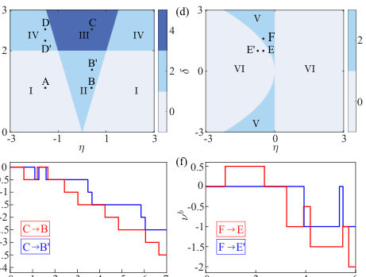
<figcaption class="paper-figure-caption"><b>Fig 1.</b> FIG. 1. (a,b) Sketch map of (η, γ) and (η, δ) model. The dashed boxes indicate the unit cell, with two sublattices colored by red and blue. (c,d) The phase diagrams in the (η, γ) and (η, δ) planes. The color depth is determined by the number of momentum point at which the real part of the energy vanishes [57]. From parameter points A to F, the associated coordinates are (-1.4,1), (0.4,1), (0.4,1.5), (0.4,2.5), (-1.4,2.5), (-1.4,2.25), (-0.5,1), (-0.8,1), (-0.5,1.5). (e,f) Dynamics of Biorthogonal DTOP for two quench processes. Here, His are the same while Hfs are close and in the same phase region.</figcaption>
</figure>
<figure class="paper-figure-card">
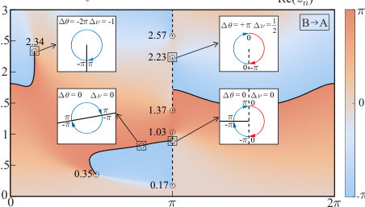
<figcaption class="paper-figure-caption"><b>Fig 2.</b> FIG. 2. Dynamical quantum phase transition for a sudden quench from B to A in the biorthogonal basis. The energy and phase in complex vector form for Hermitian case in (a) shows the integer jump of DTOP, and the non-Hermitian case in (b) shows the half-integer jump. The blue arrows in (a1) and (b1) represent the change between two k values near kc, while the dashed black arrow denotes the energy value. The colored arrows in (a2) and (b2) represent the continuous scan with respect to k at different time near tc. (c) Time-evolution of DTOP and LR. (d) The Fisher zeros in the complex-time plane. The curves with different colors label the three branches of the Fisher zeros. The panels show the...</figcaption>
</figure>
<figure class="paper-figure-card">
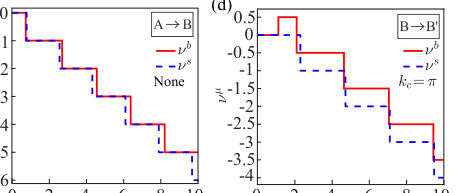
<figcaption class="paper-figure-caption"><b>Fig 3.</b> FIG. 3. Dynamical behaviors of the DTOP under different quench protocols, which exhibit periodic (a), single (b) and absence (c) of half-integer jump, respectively. Here, red solid and blue dashed lines denote the DTOP evaluated in the biorthogonal and self-normalized basis, respectively. (d) The case with a single half-jump difference between the two basis.</figcaption>
</figure>
<figure class="paper-figure-card">
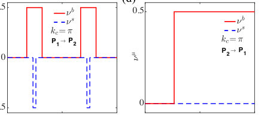
<figcaption class="paper-figure-caption"><b>Fig 4.</b> FIG. 4. Fractional dynamical topology in a four-band non-Hermitian chain. (a) Four-orbital lattice with nonreciprocal intracell hoppings J(η ∓γ), reciprocal intercell hoppings J, vertical couplings ±Jζz0, and staggered onsite potentials ±Jβ, where β = ζb. The dashed box denotes a unit cell. (b) Phase diagram in the (η, γ) plane for the occupied s = −1 sector [57]. The color scale gives the number of complex-energy discontinuities. The coordinates are P1 = (2, 2) and P2 = (2, 0.1). (c,d) Dynamical topological order parameters for the quenches P1 →P2 and P2 →P1, respectively. Red solid and blue dashed lines denote the biorthogonal (νb) and self-normalized (νs) results. The forward quench...</figcaption>
</figure>
<figure class="paper-figure-card">
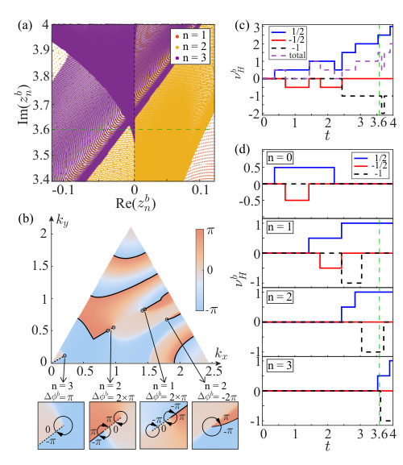
<figcaption class="paper-figure-caption"><b>Fig 5.</b> FIG. 5. DQPTs in the non-Hermitian Haldane model formulated within the biorthogonal basis. (a) Fisher zeros diagram for different branches, whose behaviors include crossing the real-time axis, or touching one side of the axis. (b) The dynamical phase ϕb k at t = 3.6 in the EBZ. The critical momenta are marked with circles. The four zoomed-in panels show the contributions from the endpoints of both dashed and solid lines. Note that each pairs of the dashed lines can merged into a solid line. (c) Total DTOP dynamics of four different types according to the value of phase jump. (d) DTOP dynamics of different branches and types. The half-integer values of DTOP are contributed by the branches n...</figcaption>
</figure>
</div>

<p><strong>Summary.</strong> This paper characterizes dynamical quantum phase transitions in non-Hermitian systems by analyzing the Dynamical Topological Order Parameter (DTOP). It proves that the characteristic half-integer quantization of this parameter arises fundamentally from discontinuities in the complex energy spectrum. This provides a unified, topological understanding of non-equilibrium criticality applicable to various non-Hermitian models.</p>
<p><strong>Why it may be interesting.</strong> The work provides a rigorous, topological characterization of non-equilibrium critical phenomena in non-Hermitian settings, which is highly relevant for understanding open quantum systems dynamics.</p>
<details>
<summary>Detailed structure</summary>
<p><strong>Main problem.</strong> The paper investigates the origin and classification of fractional dynamical topology in non-Hermitian quantum systems, specifically focusing on half-integer jumps of the dynamical topological order parameter (DTOP).</p>
<p><strong>Main result.</strong> The half-integer DTOP jumps in non-Hermitian systems originate from the discontinuity in the complex energy spectrum, distinguishing them fundamentally from the integer jumps seen in Hermitian systems.</p>
<p><strong>Method.</strong> The analysis uses the Loschmidt echo and defines the DTOP based on the phase winding of the system's evolution operator across critical momenta.</p>
<p><strong>Model / system.</strong> The study employs a two-band non-Hermitian model, exemplified by the non-Hermitian Su–Schrieffer–Heeger (SSH) model, and extends to multiband and two-dimensional Haldane models.</p>
<p><strong>Key observables.</strong> Dynamical Topological Order Parameter (DTOP), Loschmidt echo, complex energy spectrum, and phase winding ($\Delta\phi$).</p>
<p><strong>Important parameters / regimes.</strong> Quench parameters ($\eta, \gamma, \delta$), critical momenta ($k_j$), and time ($t$).</p>
<p><strong>Assumptions / limitations.</strong> The analysis relies on the biorthogonal framework and assumes the system undergoes a sudden quench from an initial to a final Hamiltonian.</p>
<p><strong>Figures summary.</strong> Figures illustrate phase diagrams, comparing integer jumps (Hermitian) with half-integer jumps (non-Hermitian) in the DTOP, and show the evolution of the DTOP in 2D systems via phase winding.</p>
<p><strong>Paper structure.</strong> The paper progresses from defining DQPTs in non-Hermitian systems using a 1D model, establishing the link between half-integer jumps and spectral discontinuities, and finally generalizing the concept to 2D systems using phase winding integrals.</p>
</details>
<details>
<summary>Abstract</summary>
<p>Dynamical quantum phase transitions (DQPT) provide a fundamental framework for characterizing nonequilibrium critical phenomena, and have recently been extended to non-Hermitian systems. Half-integer jumps of the dynamical topological order parameter can arise in both Hermitian and non-Hermitian systems, yet their origin in non-Hermitian settings remains unclear. Here, we investigate DQPTs in a two-band non-Hermitian model and show that these fractional jumps originate from the discontinuity in the complex energy spectrum. We demonstrate that this behavior is intrinsically linked to the steady-state phase diagram of the quench Hamiltonian, and also classify the occurrence of DQPT. We further extend our analysis to the multiband Hamiltonian and the two-dimensional model, providing a unified understanding of fractional dynamical topological signatures.</p>
</details>
<p><sub><a href="#top">↑ back to top</a></sub></p>

<p><a id="paper-2610.06279"></a></p>
<h3 id="electro-optical-metalens-for-near-surface-cooling-of-a-levitated-particle"><a href="http://arxiv.org/abs/2610.06279v1">Electro-Optical Metalens for Near-Surface Cooling of a Levitated Particle</a></h3>
<p><strong>Authors:</strong> Pedro Rosso Gomez, Bruno Melo, Adeel Afridi, Mohamed Sabry Mohamed, Nadine Meyer, Romain Quidant<br>
<strong>Type:</strong> experiment · <strong>Category:</strong> other · <strong>PDF:</strong> <a href="https://arxiv.org/pdf/2610.06279v1">https://arxiv.org/pdf/2610.06279v1</a><br>
<strong>Analysis basis:</strong> full PDF text, analyzed in chunks
<strong>Topic relevance:</strong> 🔥 <code>quantum measurements</code> <strong>4/5</strong> · <code>driven-dissipative phase transition</code> <strong>2/5</strong> · <code>quantum optics experiment</code> <strong>2/5</strong> · <code>QC/QI experiment</code> <strong>1/5</strong> · <code>analog quantum simulation</code> <strong>1/5</strong> · <code>correlated / nonlocal dissipation</code> <strong>1/5</strong> · <code>interference shaping light</code> <strong>1/5</strong> · <code>methods for driven-dissipative</code> <strong>1/5</strong></p>
<div class="figure-strip-hint">↔ Scroll figures horizontally</div>
<div class="paper-figures-scroll">
<figure class="paper-figure-card">
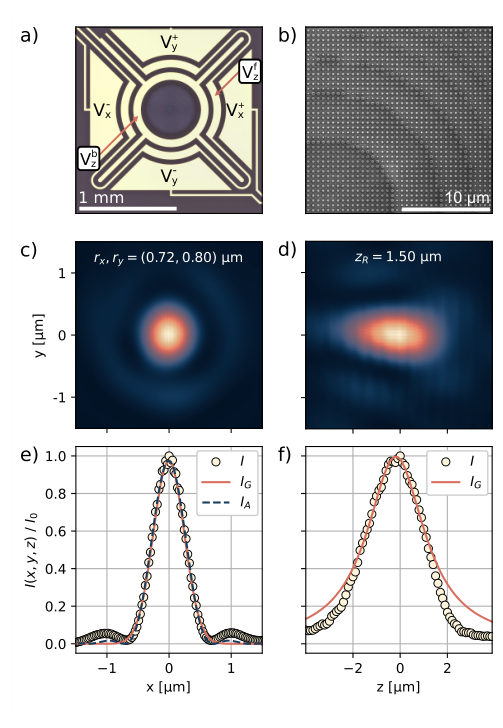
<figcaption class="paper-figure-caption"><b>Fig 1.</b> Figure 1. Hybrid electro-optical metalens: a) Planar electrode layout (yellow) with central metalens of radius RL = 250 µm (gray). Feedback voltages V ± x,y and V f,b z are applied to gold electrodes to generate time varying homogeneous electric fields for active cold damping Γj fb ∝vj(t). b) SEM picture of part of the meta-atoms forming the metalens. Different radii of the meta-atom gives rise to varying local phase shifts ϕp(x, y) following Eq. 1. c) 2D intensity profile for y-polarized light in the xy-plane at z = f with airy disc radius rx = 0.72 µm, ry = 0.8 µm, and d) in the yz-plane at x = 0 with Rayleigh range zR = 1.5 µm. e) Normalized 1D intensity profiles in the focus along x and...</figcaption>
</figure>
<figure class="paper-figure-card">
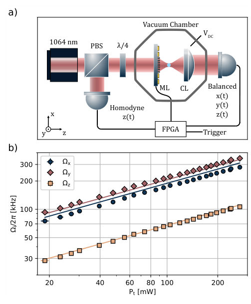
<figcaption class="paper-figure-caption"><b>Fig 2.</b> Figure 2. Particle levitation using a hybrid metalens: a) Experimental setup using a hybrid metalens to focus a laser (λ = 1064 nm, P0). A particle (blue) is trapped at the focus and the scattered light is collected with a collection lens (CL) in forward direction for balanced split detection of x(t), y(t), z(t) and through the metalens for homodyne detec- tion of z(t). Quarter waveplates (λ/4) and polarizing beam splitter (PBS) are used for polarisation control. Electrical feedback is applied with an FPGA to the planar gold elec- trodes (yellow). High voltage VDC allows to control the charge nq. b) Mechanical eigenfrequencies following the expected de- pendence on the optical power Ωj ∝√Pt...</figcaption>
</figure>
<figure class="paper-figure-card">
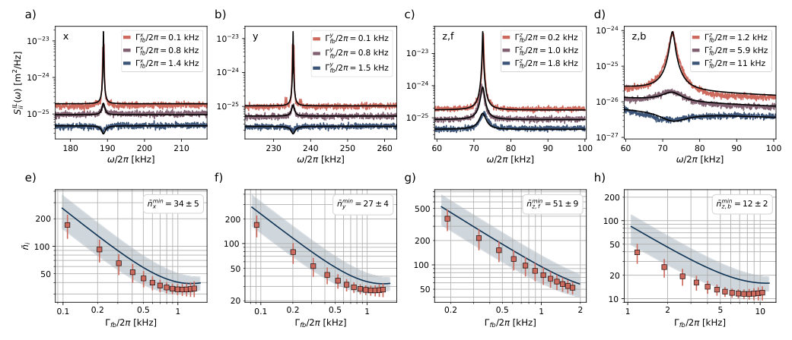
<figcaption class="paper-figure-caption"><b>Fig 3.</b> Figure 3. CoM cooling with hybrid metalens: PSD of the displacement SIL jj (ω) along a) x(t), b) y(t) , c) z(t) forward, d) z(t) backward for different feedback strengths Γj fb measured with an IL detector. Noise squashing is observed on nearly all detectors. The data is fitted to Eq. S58 (solid line, see SI) and allows the extraction of Γj fb, Γm, Ωj, σj and σj ξ. The corresponding phonon occupation e) ¯nx, f) ¯ny , g) ¯nz forward, h) ¯nz backward is estimated with Eq. 3 for varying Γj fb. The minimal phonon occupations equal [¯nmin x , ¯nmin y , ¯nmin z,f , ¯nmin z,b ] = [34, 27, 51, 12] for a particle with R = 109 nm and nq = 13, at pgas = (1.5 ± 0.15) · 10−7mbar agree well with theory...</figcaption>
</figure>
<figure class="paper-figure-card">
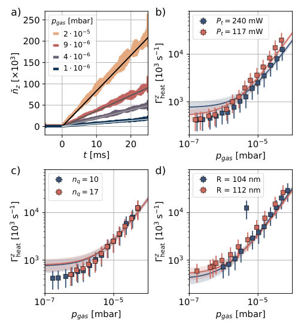
<figcaption class="paper-figure-caption"><b>Fig 4.</b> Figure 4. Reheating of CoM motion: a) Phonon occupa- tion ¯nz(t) with Γz fb &gt; 0 for t ≤0 and Γz fb = 0 for t &gt; 0 at various pressure pgas based on 300 averaged trajectories. The linear fit (solid lines) estimates the heating rate Γj heat. Γj heat versus pgas for b) different trapping powers Pt, c) different charges nq, and d) different particle sizes R. The errorbars correspond to the standard deviation of the 300 independent trajectories. The solid lines are theoretical estimations based on independent measurements of pgas, R, nq, Pt, wx, wy and zR and the shaded areas represent one standard deviation of those parameters. The parameters are stated in the SI.</figcaption>
</figure>
</div>

<p><strong>Summary.</strong> This paper presents an integrated chip-scale platform using a metalens for optical levitation and active electrical feedback for motion control of a nanoparticle. The authors successfully cooled the particle's motion to low phonon occupations in vacuum. This work marks a significant step toward realizing complex, controllable quantum levitation systems on a chip.</p>
<p><strong>Why it may be interesting.</strong> This work is highly relevant as it pushes the boundaries of integrated quantum optomechanics by combining metaoptics for complex potential engineering with active electrical feedback for quantum cooling, directly addressing open quantum system control.</p>
<details>
<summary>Detailed structure</summary>
<p><strong>Main problem.</strong> The challenge is achieving advanced levitation optomechanics in the quantum regime, requiring precise control over both optical and electrical potentials at short length and time scales.</p>
<p><strong>Main result.</strong> The authors successfully demonstrated optical levitation and motion control down to low phonon occupation using a compact, integrated electro-optical metalens platform.</p>
<p><strong>Method.</strong> They combined a high numerical aperture metalens for optical trapping with active electrical feedback applied via planar electrodes to damp the particle's center-of-mass motion.</p>
<p><strong>Model / system.</strong> The system involves a charged nanoparticle levitated in vacuum above a hybrid electro-optical metalens chip. The trapping potential is engineered optically, and the motion control is achieved by applying feedback forces derived from planar electrodes.</p>
<p><strong>Key observables.</strong> Low phonon occupations ($ar{n}_{min,j}$), mechanical eigenfrequencies ($\Omega_j$), and the time evolution of phonon occupation ($ar{n}_j(t)$) after feedback is removed.</p>
<p><strong>Important parameters / regimes.</strong> Trapping power ($P_t$), particle radius ($R$), planar electrode voltages ($V_{\pm x}, V_{f,b z}$), and ambient pressure ($p_{gas}$).</p>
<p><strong>Assumptions / limitations.</strong> The analysis assumes the potential can be reconstructed via the Gibbs probability density function, and they specifically tested for and ruled out significant electrical field noise as a heating source.</p>
<p><strong>Figures summary.</strong> Figure 1 details the metalens structure and intensity profiles. Figure 2 shows the experimental setup and the dependence of mechanical eigenfrequencies on optical power. Figure 3 and 4 illustrate the particle's power spectral density and the time decay of phonon occupation, respectively.</p>
<p><strong>Paper structure.</strong> The paper progresses from establishing the need for advanced control in quantum optomechanics, detailing the metalens design and its application for trapping, demonstrating active cooling via electrical feedback, and finally analyzing heating sources by measuring phonon decay rates.</p>
</details>
<details>
<summary>Abstract</summary>
<p>Advanced levitation optomechanics in the quantum regime requires sophisticated quantumengineered protocols operating at shorter length and time scales, demanding an increasing control over both optical and electrical potentials. Integrated chip-scale platforms offer a natural route toward such control. Here, we demonstrate optical levitation in vacuum using a miniaturized hybrid electro-optical metalens. Motion control is achieved using a high numerical aperture metalens combined with electrical active feedback using planar electrodes, enabling cooling to low phonon occupations. Reheating measurements enable us to rule out any significant influence from electric field noise; an encouraging result for the future development of on-chip levitation platforms operating close to surfaces. This compact integrated platform facilitates the precise manipulation and control of levitated nanoparticles while laying the ground toward exploiting the full capacity of metaoptics to engineer complex optical potentials, marking a significant step forward in technologies for quantum levitation optomechanics.</p>
</details>
<p><sub><a href="#top">↑ back to top</a></sub></p>

<p><a id="paper-2610.05153"></a></p>
<h3 id="on-the-completeness-of-quantum-mechanics-sources-records-and-probabilities"><a href="http://arxiv.org/abs/2610.05153v1">On the Completeness of Quantum Mechanics: Sources, Records and Probabilities</a></h3>
<p><strong>Authors:</strong> Mustafa Bakr<br>
<strong>Type:</strong> theory · <strong>Category:</strong> other · <strong>PDF:</strong> <a href="https://arxiv.org/pdf/2610.05153v1">https://arxiv.org/pdf/2610.05153v1</a><br>
<strong>Analysis basis:</strong> full PDF text, analyzed in chunks
<strong>Topic relevance:</strong> 🔥 <code>quantum measurements</code> <strong>4/5</strong> · <code>correlated / nonlocal dissipation</code> <strong>2/5</strong> · <code>driven-dissipative phase transition</code> <strong>2/5</strong> · <code>Full counting statistics</code> <strong>1/5</strong> · <code>Keldysh / 2PI / non-Gaussian methods</code> <strong>1/5</strong> · <code>analog quantum simulation</code> <strong>1/5</strong> · <code>methods for driven-dissipative</code> <strong>1/5</strong> · <code>non-equilibrium universality</code> <strong>1/5</strong></p>
<div class="figure-strip-hint">↔ Scroll figures horizontally</div>
<div class="paper-figures-scroll">
<figure class="paper-figure-card">
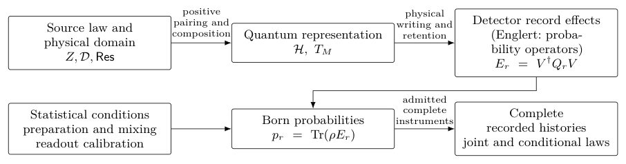
<figcaption class="paper-figure-caption"><b>Fig 1.</b> FIG. 1. The physical questions in the reconstruction. Each arrow requires the conditions stated in the text. The upper row constructs represented objects without assigning chances to records. The displayed effect uses an isometric apparatus. A complete nonunitary process uses its dual map. The statistical conditions enter separately. The resulting history law specifies probabilities. It does not select the record realized in one run.</figcaption>
</figure>
<figure class="paper-figure-card">
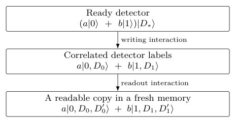
<figcaption class="paper-figure-caption"><b>Fig 2.</b> FIG. 2. A reference example of writing and reading an orthog- onal detector label, with |a|2 + |b|2 = 1. The ready state is distinct from either written label. The complete state still has both components. Retention requires that the labels remain readable under the admitted later operations. A coherent era- sure can remove the stored distinction and lies outside that retention requirement. These interactions construct record alternatives, without selecting one of them.</figcaption>
</figure>
</div>

<p><strong>Summary.</strong> This theoretical paper attempts to derive the mathematical structure of quantum mechanics—including the Born rule—from fundamental physical principles governing sources and detectors, bypassing the need for a collapse postulate. It establishes a rigorous framework where the quantum formalism emerges from the algebraic properties of physical input/output processes. The work is significant for foundational physics, challenging the necessity of assuming quantum mechanics is fundamental.</p>
<p><strong>Why it may be interesting.</strong> This work tackles the foundations of quantum theory by deriving core quantum mechanical features (like the Born rule) from minimal physical assumptions about information flow, which is highly relevant to open quantum systems and measurement theory.</p>
<details>
<summary>Detailed structure</summary>
<p><strong>Main problem.</strong> The paper investigates whether quantum mechanics can be fully described by underlying physical sources, detectors, and statistical rules without invoking the fundamental collapse postulate.</p>
<p><strong>Main result.</strong> It reconstructs the quantum representation and Born probabilities solely from the source structure, suggesting that familiar paradoxes arise from misinterpreting coherent processes versus realized outcomes.</p>
<p><strong>Method.</strong> The methodology involves abstract algebraic reconstruction, defining the quantum structure via source pairings ($K_{\Sigma}$), enforcing positivity conditions, and deriving probability rules from physical constraints.</p>
<p><strong>Model / system.</strong> The model is highly abstract, defining physical processes using 'sources' ($    ext{Src}$) characterized by input/output boundaries and joining rules, formalized using category theory concepts.</p>
<p><strong>Key observables.</strong> Source functional $Z$, pairing matrix $K_{\Sigma}(s, t)$, Born probabilities ($   ext{pr} =   ext{Tr}(
ho  ext{Er})$), and detector effects ($ ext{Er}$).</p>
<p><strong>Important parameters / regimes.</strong> The structure relies on hypotheses regarding continuous phases, positivity of pairing matrices, and the existence of specific physical record laws.</p>
<p><strong>Assumptions / limitations.</strong> Key assumptions include the existence of a source functional $Z$ and the ability to select a commutative scalar system isomorphic to $\mathbb{C}$ from the source structure.</p>
<p><strong>Figures summary.</strong> Figure 1 maps the physical reconstruction process, showing the flow from source law and physical domain to quantum representation, detector record effects, and finally Born probabilities.</p>
<p><strong>Paper structure.</strong> The paper proceeds by first defining the source structure, then using this structure to reconstruct the Hilbert space and operators (Chunk 2), followed by deriving probability rules from local measurement constraints (Chunk 3), and concluding with foundational questions about the nature of mathematics itself.</p>
</details>
<details>
<summary>Abstract</summary>
<p>Can quantum mechanics be complete without being fundamental? Under stated source, detector, and statistical conditions, we reconstruct the quantum representation and Born probabilities and prove complete algebraic closure of the admitted quantum predictions without requiring a collapse postulate. We further show that many familiar quantum paradoxes arise from conflating coherent processes with retained records or probabilities with realized outcomes. We also ask whether mathematics as a whole, or the source architecture itself, emerges from a deeper structure.</p>
</details>
<p><sub><a href="#top">↑ back to top</a></sub></p>

<p><a id="paper-2610.04817"></a></p>
<h3 id="competing-pathways-in-polaritonic-chemistry-and-general-harmonic-environments"><a href="http://arxiv.org/abs/2610.04817v1">Competing pathways in polaritonic chemistry and general harmonic environments</a></h3>
<p><strong>Authors:</strong> Jonas Vinther, Leonardo A. Cunha, Johannes Flick<br>
<strong>Type:</strong> theory · <strong>Category:</strong> other · <strong>PDF:</strong> <a href="https://arxiv.org/pdf/2610.04817v1">https://arxiv.org/pdf/2610.04817v1</a><br>
<strong>Analysis basis:</strong> full PDF text, analyzed in chunks
<strong>Topic relevance:</strong> 🔥 <code>methods for driven-dissipative</code> <strong>4/5</strong> · <code>Keldysh / 2PI / non-Gaussian methods</code> <strong>1/5</strong> · <code>Tavis-Cummings &amp; cavity-many-emitter</code> <strong>1/5</strong> · <code>analog quantum simulation</code> <strong>1/5</strong> · <code>correlated / nonlocal dissipation</code> <strong>1/5</strong> · <code>driven-dissipative phase transition</code> <strong>1/5</strong> · <code>non-equilibrium universality</code> <strong>1/5</strong> · <code>quantum measurements</code> <strong>1/5</strong></p>
<div class="figure-strip-hint">↔ Scroll figures horizontally</div>
<div class="paper-figures-scroll">
<figure class="paper-figure-card">
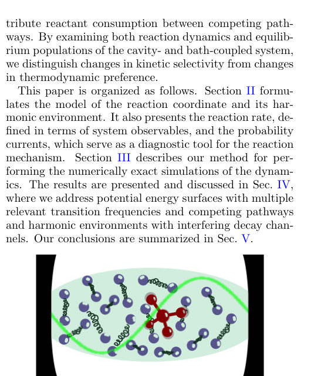
<figcaption class="paper-figure-caption"><b>Fig 1.</b> FIG. 1. An example setup consists of a single molecule (red), comprising a reaction coordinate, and may also include spectator vibrational modes. The molecule is embedded in a solvent environment represented by a phonon bath (purple). The molecular and solvent degrees of freedom are confined within an optical cavity, represented by a single cavity mode (green).</figcaption>
</figure>
<figure class="paper-figure-card">
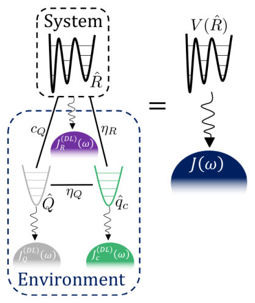
<figcaption class="paper-figure-caption"><b>Fig 2.</b> FIG. 2. Schematic for the efficient modeling of the har- monic degrees of freedom in terms of the spectral density for the full harmonic environment. Supplementary Section S2 derives and presents the formula for arbitrary harmonic en- vironments. The system refers to the reaction coordinate ˆR, here visualized in terms of the PES V ( ˆR) for the triple well system treated in Sec. IV A 3. The spectator mode has co- ordinate ˆQ and the cavity ˆqc. The couplings between them are denoted by cQ, ηR and ηQ and J(DL) (R,Q,c)(ω) refer to the individual baths which we choose to be of the Drude-Lorentz form.</figcaption>
</figure>
<figure class="paper-figure-card">
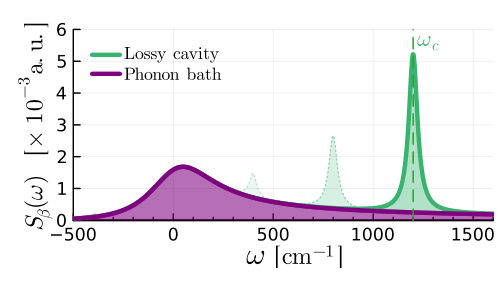
<figcaption class="paper-figure-caption"><b>Fig 3.</b> FIG. 3. The noise spectrum when there is no spectator mode (cQ = ηQ = 0). The effect of the cavity is captured by the peak centered around ωc (Eq. 12). The height of this peak scales with ∼ω2 c, as dictated by the Pauli-Fierz Hamiltonian. For visualizations of noise spectra with the full spectral den- sity of Eq. 7, see Fig. 8.</figcaption>
</figure>
<figure class="paper-figure-card">
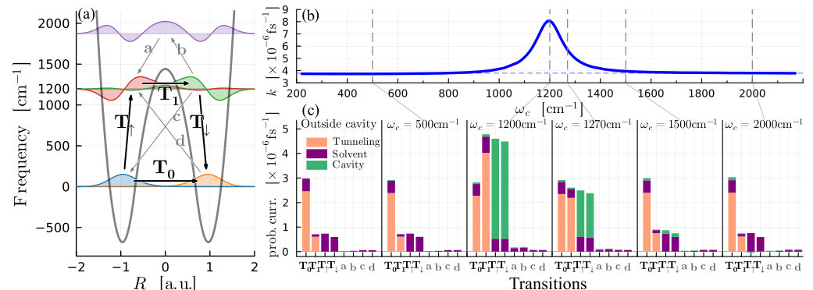
<figcaption class="paper-figure-caption"><b>Fig 4.</b> FIG. 4. (a) The wavefunction of the localized states of the reaction coordinate visualized alongside the potential with the y-axis providing the energy difference to the ground state. The transitions between these states are labeled and visualized by arrows. (b) Reaction rate profile when varying the cavity frequency compared to the out-of-cavity reaction rate (horizontal dashed line). Due to the symmetry of the PES, the forward and backward reaction rates are equal k := k→= k←. (c) The probability current at t = 6 ps for the labeled transitions as a function of the cavity frequency. The probability currents are decomposed in terms of contributions from the system Hamiltonian (tunneling)...</figcaption>
</figure>
<figure class="paper-figure-card">
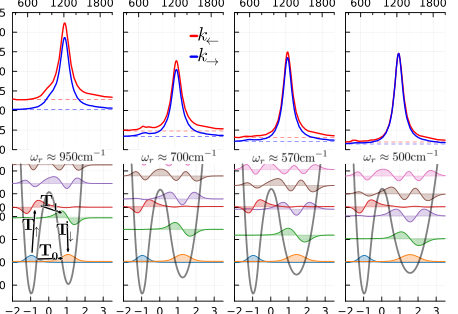
<figcaption class="paper-figure-caption"><b>Fig 5.</b> FIG. 5. The bottom row shows four different potential en- ergy surfaces, with transition frequencies in the right-well of around ωr ∈{950, 700, 570, 500} × cm−1. The top row shows the reaction rate from the left well to the right well in blue and the converse in red, for varying ωc, when coupled to the spec- tral density in Eq. 12. The horizontal dashed lines correspond to the reaction rates outside the cavity. The probability cur- rents of the system with ωr ≈950 cm−1 are shown in Fig. 6.</figcaption>
</figure>
</div>

<p><strong>Summary.</strong> This paper develops a quantum-dynamical framework using extended HEOM methods to study chemical reactions under strong light-matter coupling. It calculates state-to-state probability currents to show how cavity-induced changes can selectively alter reaction pathways and branching ratios. The findings establish a mechanistic understanding of pathway-specific reactivity in complex quantum chemical environments.</p>
<p><strong>Why it may be interesting.</strong> This work directly addresses open quantum system dynamics in chemistry, which is a core area of AMO physics, by providing a detailed, pathway-specific analysis of environmental coupling effects.</p>
<details>
<summary>Detailed structure</summary>
<p><strong>Main problem.</strong> The paper aims to provide a microscopic understanding of how strong light-matter coupling (polaritonic chemistry) alters chemical reaction rates and yields by analyzing competing reaction pathways.</p>
<p><strong>Main result.</strong> Local modifications induced by cavity coupling can selectively redistribute reaction flux between competing pathways, changing branching ratios under irreversible conditions without affecting the equilibrium yield in the reversible regime.</p>
<p><strong>Method.</strong> The authors employ an extended tensor-network formulation of the Hierarchical Equations of Motion (HEOM) method to compute state-to-state probability currents.</p>
<p><strong>Model / system.</strong> The system models molecules undergoing reactions (reaction coordinate $\hat{R}$) coupled to spectator modes ($\hat{Q}$) and cavity modes ($\hat{c}$), all embedded in general harmonic environments (baths).</p>
<p><strong>Key observables.</strong> Reaction rates, probability currents between vibrational states, kinetic bottlenecks, and branching ratios.</p>
<p><strong>Important parameters / regimes.</strong> Irreversible vs. reversible regimes, coupling strengths ($\eta_v$), and the spectral density $J(\omega)$ of the bath.</p>
<p><strong>Assumptions / limitations.</strong> The reaction coordinate ($\hat{R}$) is assumed to be the only anharmonic degree of freedom, and the bath is treated via the Caldeira-Leggett model.</p>
<p><strong>Figures summary.</strong> Figures illustrate the physical setup involving coupled modes (R, Q, c) and show the abstraction from the microscopic environment to the full spectral density $J(\omega)$.</p>
<p><strong>Paper structure.</strong> The work progresses from identifying the gap in understanding VSC effects to proposing the HEOM extension, detailing the calculation of probability currents, and finally presenting results on flux redistribution and asymmetric rate profiles.</p>
</details>
<details>
<summary>Abstract</summary>
<p>Recent experiments suggest that strong light-matter coupling between molecules and cavity modes can significantly modify chemical reaction rates and yields. Despite multiple proposed mechanisms, a clear microscopic understanding of how vibrational strong coupling alters reaction kinetics remains incomplete. Here, we employ a general quantum-dynamical framework for analyzing competing reaction pathways in polaritonic chemistry by considering reaction coordinates with multiple relevant transition frequencies and general harmonic environments. We extend on a tensor-network formulation of the hierarchical equations of motion (HEOM) method to compute probability currents between vibrational states, leveraging a concise formulation for effective spectral densities and a controlled compression of Markovian bath modes into system-level jump operators. This allows us to decompose the resulting state-to-state probability currents, revealing how cavity-induced changes in individual transitions propagate through multistep reaction networks. We find that these local modifications can alter kinetic bottlenecks and selectively redistribute reaction flux between competing pathways, changing branching ratios under irreversible conditions without substantially affecting the equilibrium yield in the reversible regime. Finally, for coupled reaction-coordinate, spectator-mode, and cavity environments, we find structured, asymmetric rate profiles arising from interference between hybridized decay channels. Together, these results provide a mechanistic framework for understanding pathway-specific chemical reactivity under vibrational strong coupling.</p>
</details>
<p><sub><a href="#top">↑ back to top</a></sub></p>

<p><a id="paper-2610.05083"></a></p>
<h3 id="the-quantum-classical-bipartite-universe-and-the-logical-emergence-of-math190math-from-classical-temporality"><a href="http://arxiv.org/abs/2610.05083v1">The quantum-classical bipartite universe and the logical emergence of $\hbar$ from classical temporality</a></h3>
<p><strong>Authors:</strong> Vincenzo Chilla<br>
<strong>Type:</strong> theory · <strong>Category:</strong> other · <strong>PDF:</strong> <a href="https://arxiv.org/pdf/2610.05083v1">https://arxiv.org/pdf/2610.05083v1</a><br>
<strong>Analysis basis:</strong> full PDF text, analyzed in chunks
<strong>Topic relevance:</strong> 🔥 <code>quantum measurements</code> <strong>4/5</strong> · <code>correlated / nonlocal dissipation</code> <strong>2/5</strong> · <code>driven-dissipative phase transition</code> <strong>2/5</strong> · <code>methods for driven-dissipative</code> <strong>2/5</strong> · <code>Keldysh / 2PI / non-Gaussian methods</code> <strong>1/5</strong></p>
<div class="figure-strip-hint">↔ Scroll figures horizontally</div>
<div class="paper-figures-scroll">
<figure class="paper-figure-card">
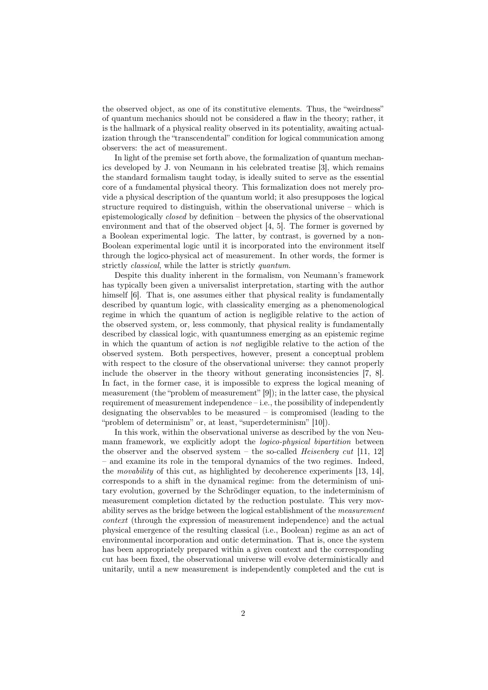
<figcaption class="paper-figure-caption"><b>Fig 1.</b> Low-resolution page preview, page 2</figcaption>
</figure>
<figure class="paper-figure-card">
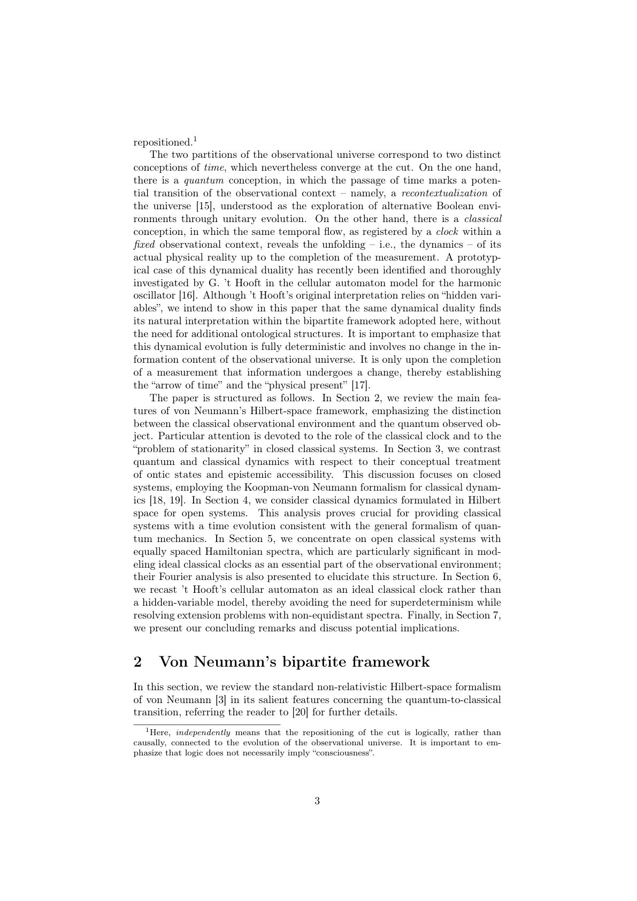
<figcaption class="paper-figure-caption"><b>Fig 2.</b> Low-resolution page preview, page 3</figcaption>
</figure>
<figure class="paper-figure-card">
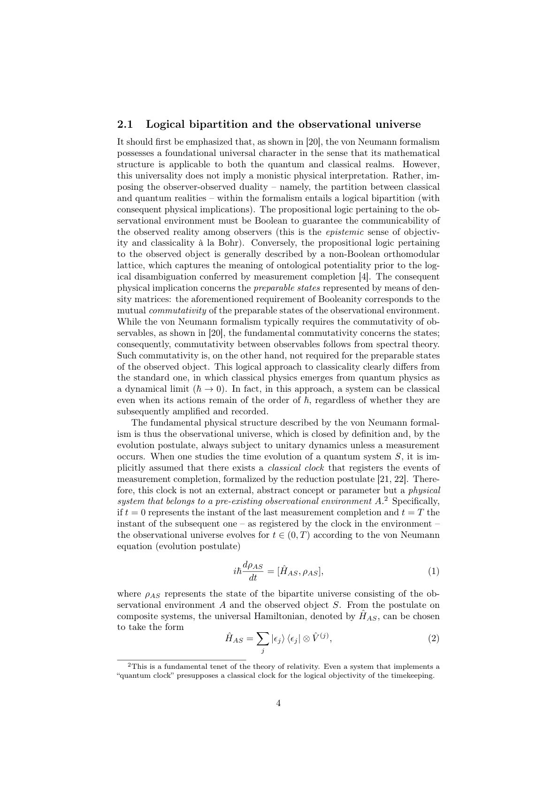
<figcaption class="paper-figure-caption"><b>Fig 3.</b> Low-resolution page preview, page 4</figcaption>
</figure>
<figure class="paper-figure-card">
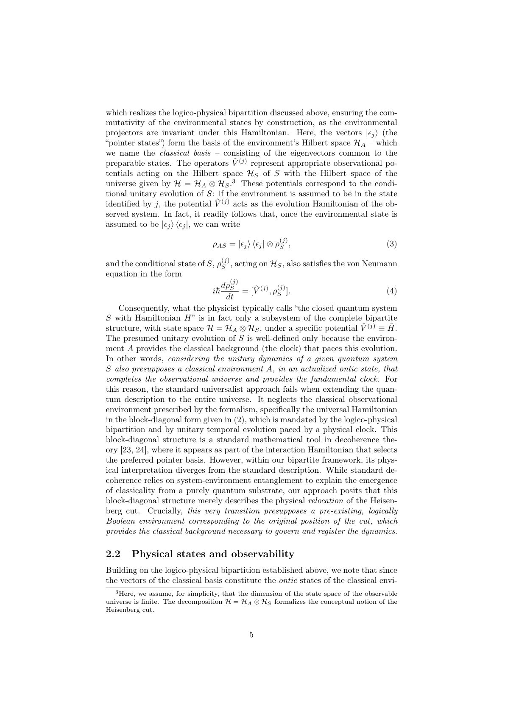
<figcaption class="paper-figure-caption"><b>Fig 4.</b> Low-resolution page preview, page 5</figcaption>
</figure>
<figure class="paper-figure-card">
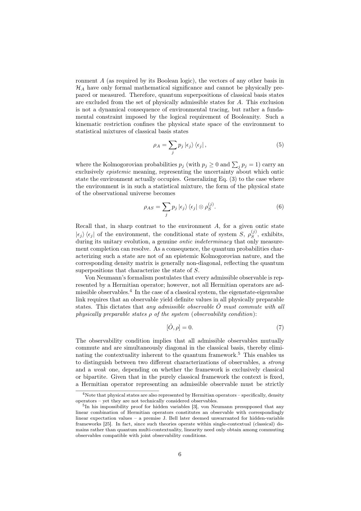
<figcaption class="paper-figure-caption"><b>Fig 5.</b> Low-resolution page preview, page 6</figcaption>
</figure>
</div>

<p><strong>Summary.</strong> This work proposes a foundational reinterpretation of quantum mechanics by dividing reality into a classically governed environment (Boolean logic) and a quantum system (non-Boolean logic). It resolves the measurement problem by showing that the quantum of action, $\hbar$, emerges naturally from the discrete, deterministic dynamics of an ideal classical clock. This framework provides a novel logical structure for understanding the transition from quantum potentiality to classical actuality.</p>
<p><strong>Why it may be interesting.</strong> It offers a novel, logic-based approach to measurement theory that bypasses standard decoherence mechanisms by grounding classicality in Boolean logic, which is highly relevant to foundational quantum theory.</p>
<details>
<summary>Detailed structure</summary>
<p><strong>Main problem.</strong> The paper reinterprets quantum dynamics by positing a structural logical bipartition between a classical environment and a quantum system to resolve the measurement problem.</p>
<p><strong>Main result.</strong> It derives Planck's constant ($\hbar$) as a fundamental scaling parameter emerging from the discrete logical structure of the classical clock's action-angle commutation relation.</p>
<p><strong>Method.</strong> The analysis uses the von Neumann formalism, imposing distinct logical structures (Boolean for environment, non-Boolean for system) and analyzing the dynamics via the GKSL master equation.</p>
<p><strong>Model / system.</strong> The model involves a quantum system coupled to a classical observational environment, modeled as an open system with a discretized energy spectrum (the 'clock').</p>
<p><strong>Key observables.</strong> The action variable ($\hat{J}$) and the phase variable ($\Phi$) derived from the clock's dynamics.</p>
<p><strong>Important parameters / regimes.</strong> Planck's constant ($\hbar$), the time step ($   au$), and the energy gap ($\Delta E$).</p>
<p><strong>Assumptions / limitations.</strong> The core assumption is the structural logical bipartition (Heisenberg cut) between the environment and the system, which dictates the mathematical structure of the dynamics.</p>
<p><strong>Figures summary.</strong> Not specified.</p>
<p><strong>Paper structure.</strong> The paper proceeds by establishing the logical bipartition, analyzing the dynamics using the GKSL equation, deriving the deterministic attractor for the clock, and finally deriving $\hbar$ from the classical clock's commutation relations.</p>
</details>
<details>
<summary>Abstract</summary>
<p>We present a foundational reinterpretation of quantum dynamics based on the standard von Neumann formalism, positing a structural logical bipartition between a classical observational environment and a quantum observed system. Against universalist frameworks, we show that theoretical consistency requires distinct propositional logics: Boolean logic governs the environment, while non-Boolean logic applies to the observed system. Within this framework, an ideal classical clock is represented as an open system whose energy spectrum is uniformly discretized. The dynamics follow from the Gorini-Kossakowski-Sudarshan-Lindblad (GKSL) master equation under the constraint that the Hamiltonian remains observable. Although the clock's temporal evolution is driven by dissipative coupling to the measurement apparatus, it admits a stable, deterministic solution corresponding to information-preserving cyclic dynamics. This deterministic regime emerges as a logical attractor, stabilized by the Boolean structure inherent to the measurement interaction. Ultimately, $\hbar$ is derived as a fundamental scaling parameter from the classical clock's action-angle commutation relation, revealing that the quantum of action reflects the discrete logical structure underlying classical temporality. Furthermore, this framework establishes an exact mapping with 't Hooft's cellular automaton formalism, offering an alternative ontological interpretation that not require hidden variables and superdeterministic assumptions. The resulting distinction between quantum dynamics (as potential recontextualization) and classical dynamics (as temporal actualization) provides a novel logical approach to the measurement problem.</p>
</details>
<p><sub><a href="#top">↑ back to top</a></sub></p>

<p><a id="paper-2610.05647"></a></p>
<h3 id="transformer-based-time-series-inference-of-lindblad-dynamics-in-open-quantum-systems"><a href="http://arxiv.org/abs/2610.05647v1">Transformer-Based Time-Series Inference of Lindblad Dynamics in Open Quantum Systems</a></h3>
<p><strong>Authors:</strong> Julian Guam, Jianqing Liu<br>
<strong>Type:</strong> theory · <strong>Category:</strong> other · <strong>PDF:</strong> <a href="https://arxiv.org/pdf/2610.05647v1">https://arxiv.org/pdf/2610.05647v1</a><br>
<strong>Analysis basis:</strong> full PDF text, analyzed in chunks
<strong>Topic relevance:</strong> 🔥 <code>methods for driven-dissipative</code> <strong>4/5</strong> · <code>quantum measurements</code> <strong>3/5</strong> · <code>Keldysh / 2PI / non-Gaussian methods</code> <strong>1/5</strong> · <code>analog quantum simulation</code> <strong>1/5</strong> · <code>correlated / nonlocal dissipation</code> <strong>1/5</strong> · <code>driven-dissipative phase transition</code> <strong>1/5</strong></p>
<div class="figure-strip-hint">↔ Scroll figures horizontally</div>
<div class="paper-figures-scroll">
<figure class="paper-figure-card">
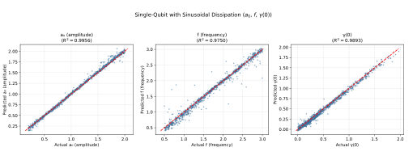
<figcaption class="paper-figure-caption"><b>Fig 1.</b> Fig. 3. Improved dissipation analysis by setting initial phases in sinusoidal parameterization</figcaption>
</figure>
<figure class="paper-figure-card">
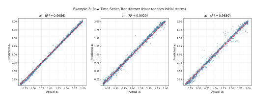
<figcaption class="paper-figure-caption"><b>Fig 2.</b> Fig. 1. Single-qubit time-dependent dissipation analysis</figcaption>
</figure>
<figure class="paper-figure-card">
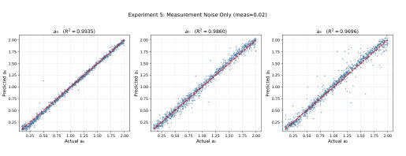
<figcaption class="paper-figure-caption"><b>Fig 3.</b> Fig. 4. Dissipation analysis with measurement noise</figcaption>
</figure>
<figure class="paper-figure-card">
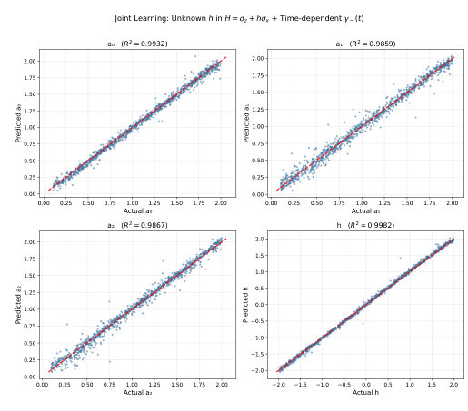
<figcaption class="paper-figure-caption"><b>Fig 4.</b> Fig. 2. Analysis of partially unknown Hamiltonian along with time-dependent dissipation</figcaption>
</figure>
<figure class="paper-figure-card">
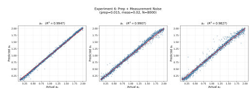
<figcaption class="paper-figure-caption"><b>Fig 5.</b> Fig. 5. Dissipation analysis with measurement and state preparation noise</figcaption>
</figure>
</div>

<p><strong>Summary.</strong> This paper introduces a novel Transformer-based framework to solve the inverse problem of open quantum system dynamics. By directly processing raw time-series data of Pauli expectation values, the model can robustly and automatically infer unknown, time-dependent dissipation rates and Hamiltonian parameters. This represents a significant advancement over prior machine learning methods that required manual feature engineering.</p>
<p><strong>Why it may be interesting.</strong> This work provides a powerful, data-driven tool for characterizing complex quantum environments by bypassing the need for restrictive analytical assumptions, making it highly relevant for experimental quantum optics and open quantum system research.</p>
<details>
<summary>Detailed structure</summary>
<p><strong>Main problem.</strong> The paper addresses the challenging inverse problem of inferring unknown or time-dependent dissipation rates and Hamiltonian parameters in open quantum systems when traditional analytical methods fail.</p>
<p><strong>Main result.</strong> A raw time-series Transformer model was developed that achieves high reconstruction accuracy for unknown parameters by directly ingesting raw Pauli expectation value trajectories, eliminating the need for manual feature engineering.</p>
<p><strong>Method.</strong> The authors employ an encoder-only Transformer architecture, using self-attention to process the full time-series data of Pauli expectation values ($\langle\sigma_i(t)
angle$) to jointly learn unknown system parameters.</p>
<p><strong>Model / system.</strong> The system is an open quantum system governed by the Lindblad master equation. The dynamics are characterized by a Hamiltonian $H$ and time-dependent dissipation channels $\gamma_k(t)$.</p>
<p><strong>Key observables.</strong> Expectation values of Pauli operators ($\langle\sigma_x(t)
angle, \langle\sigma_y(t)
angle, \langle\sigma_z(t)
angle$).</p>
<p><strong>Important parameters / regimes.</strong> Time-dependent dissipation rates $\gamma_k(t)$, unknown Hamiltonian parameters (e.g., $h$), and the coefficients defining the parameterization (e.g., Bernstein polynomial coefficients).</p>
<p><strong>Assumptions / limitations.</strong> The dynamics are modeled using the Born-Markov approximation, and the model assumes the system can be parameterized by a known functional form (e.g., Bernstein or sinusoidal) for the unknown rates.</p>
<p><strong>Figures summary.</strong> Figures illustrate the raw time-series analysis for single-qubit dissipation using Bernstein polynomials, the joint inference of unknown Hamiltonian parameters alongside dissipation, and the robustness of the method under varying levels of measurement and preparation noise.</p>
<p><strong>Paper structure.</strong> The paper follows a structure covering background theory (Lindblad equation, Transformer basics), detailed methodology (raw time-series Transformer implementation), and comprehensive evaluation results demonstrating performance across various noise and parameter regimes.</p>
</details>
<details>
<summary>Abstract</summary>
<p>The Lindblad master equation is the standard framework for describing the non-unitary evolution of open quantum systems, where environmental interactions induce dissipation and decoherence. When both the system Hamiltonian and the dissipation rates are partially unknown or explicitly time-dependent, traditional analytical inversion and system-identification techniques become intractable. Recent works have demonstrated that Transformer-based models can infer unknown dissipation rates from observable time series, yet these approaches typically rely on hand-crafted statistical features under idealized and highly restricted conditions. Here we advance the paradigm by introducing a raw time-series Transformer that directly ingests the full trajectories of Pauli expectation values $\langleσ_x(t)\rangle$, $\langleσ_y(t)\rangle$, and $\langleσ_z(t)\rangle$, thereby fully exploiting the self-attention mechanism for temporal modeling. The architecture is further extended to jointly learn unknown Hamiltonian parameters, handle multiple dissipation channels, and operate robustly under realistic measurement noise. Across all tested scenarios the model achieves consistently high reconstruction accuracy while eliminating manual feature engineering. This provides a scalable, robust, and versatile framework for quantum environment sensing in realistic open quantum systems.</p>
</details>
<p><sub><a href="#top">↑ back to top</a></sub></p>

<p><a id="paper-2610.06194"></a></p>
<h3 id="a-robust-framework-for-the-comprehensive-characterisation-of-parametric-down-conversion-sources"><a href="http://arxiv.org/abs/2610.06194v1">A robust framework for the comprehensive characterisation of parametric down-conversion sources</a></h3>
<p><strong>Authors:</strong> Denis A. Kopylov, Michael Stefszky, Christine Silberhorn<br>
<strong>Type:</strong> theory · <strong>Category:</strong> other · <strong>PDF:</strong> <a href="https://arxiv.org/pdf/2610.06194v1">https://arxiv.org/pdf/2610.06194v1</a><br>
<strong>Analysis basis:</strong> full PDF text, analyzed in chunks
<strong>Topic relevance:</strong> 🔥 <code>quantum optics experiment</code> <strong>4/5</strong> · <code>quantum measurements</code> <strong>3/5</strong> · <code>Keldysh / 2PI / non-Gaussian methods</code> <strong>1/5</strong> · <code>interference shaping light</code> <strong>1/5</strong> · <code>methods for driven-dissipative</code> <strong>1/5</strong></p>
<div class="figure-strip-hint">↔ Scroll figures horizontally</div>
<div class="paper-figures-scroll">
<figure class="paper-figure-card">
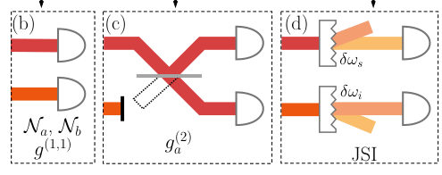
<figcaption class="paper-figure-caption"><b>Fig 1.</b> FIG. 1. (a) The scheme of a GSID-source. (b) Detection scheme for mean photon number and g(11) measurements. (c) The detection scheme for g(2) a measurement. (d) Frequency resolved measurement: spectrum and JSI.</figcaption>
</figure>
<figure class="paper-figure-card">
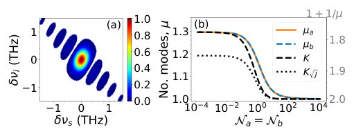
<figcaption class="paper-figure-caption"><b>Fig 2.</b> FIG. 3. (a) The JSI and (b) the dependence of the number of modes for the state seen directly after the generation stage of the realistic GSID-source).</figcaption>
</figure>
<figure class="paper-figure-card">
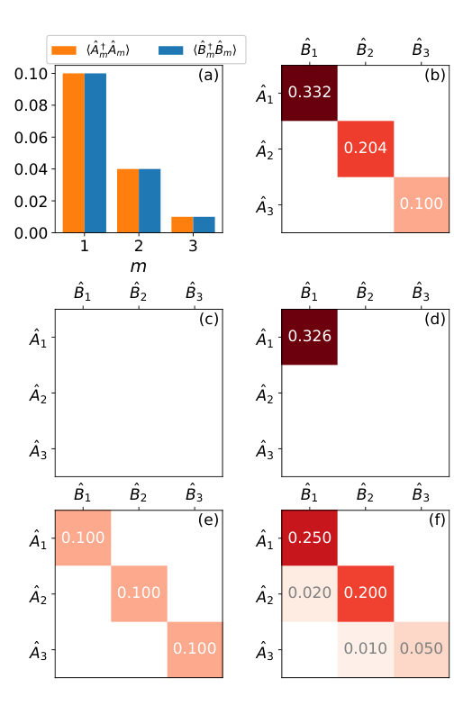
<figcaption class="paper-figure-caption"><b>Fig 3.</b> FIG. 2. Correlation matrices in MW-basis for the considered GSID-states in Sec. V A. (a) The diagonal elements of ma- trices DA,B (The photon number distribution in MW-basis). The matrices DA,B are the same for all the considered states. The matrices CAB for the considered states: (b) pure, (c) thermal, (d) mixed I, (e) mixed II and (f) mixed III. The re- sulting parameters are given in Table I .</figcaption>
</figure>
<figure class="paper-figure-card">
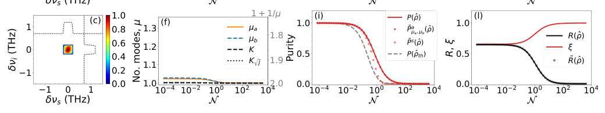
<figcaption class="paper-figure-caption"><b>Fig 4.</b> FIG. 4. The numerical results for the GSID-sources ‘S1’ (a,d,g,j), ‘S2’ (b,e,h,k) and ‘S3’(c,f,i,l). (a-c) The JSI for the sources ‘S1’, ‘S2’ and ‘S3’. (d-f) The number of modes µa,b, the number of correlated modes K, and the number K√</figcaption>
</figure>
<figure class="paper-figure-card">
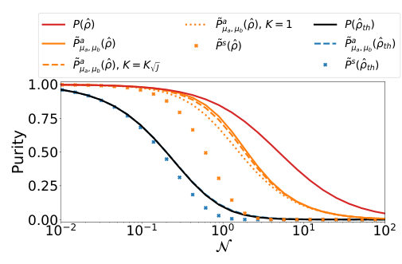
<figcaption class="paper-figure-caption"><b>Fig 5.</b> FIG. 5. The purity (red line) and its bounds for the state ˆρ generated by ‘S1′ as a function of generated photon number. The approximate purity bounds (55) are calculated using; the actual number of correlated modes K (orange solid line), with K replaced by K√</figcaption>
</figure>
</div>

<p><strong>Summary.</strong> This paper introduces a robust, device-agnostic framework to characterize the quality of squeezed-light sources from Parametric Down-Conversion (PDC). It addresses the critical flaw in existing methods—the assumption of state purity—by treating the source as a black box generating a mixed multimode Gaussian state. The resulting framework provides practical, measurable benchmarks for optimizing quantum light sources for advanced quantum applications.</p>
<p><strong>Why it may be interesting.</strong> This work is highly relevant to quantum optics and open quantum systems, as it provides rigorous mathematical tools to quantify the quality of non-ideal quantum sources, which is crucial for scaling up quantum technologies.</p>
<details>
<summary>Detailed structure</summary>
<p><strong>Main problem.</strong> Developing a reliable, device-agnostic method to characterize the purity and quality of squeezed-light sources generated via Parametric Down-Conversion (PDC).</p>
<p><strong>Main result.</strong> The authors propose a framework that finds a lower bound for state purity using mode-unresolved measurements, circumventing the limitations of existing techniques that assume the state is pure.</p>
<p><strong>Method.</strong> The framework treats the source as a black box producing a mixed multimode Gaussian state, analyzing correlation functions and mode structures.</p>
<p><strong>Model / system.</strong> The system is a PDC-based source generating a Generalized Signal-Idler Distinguishable (GSID) state, modeled as a mixed multimode Gaussian state with distinguishable signal and idler fields.</p>
<p><strong>Key observables.</strong> State purity, mode structure ($\mu_a, \mu_b, K$), correlation degree ($\xi$), and measurable correlation functions via mode-unresolved and frequency-resolved measurements.</p>
<p><strong>Important parameters / regimes.</strong> The analysis considers the limitations imposed by optical imperfections, losses, and the distinction between correlated modes ($K$) and individual mode counts ($\mu$).</p>
<p><strong>Assumptions / limitations.</strong> The primary assumption addressed is the failure of existing characterization methods when the generated state is mixed due to experimental imperfections.</p>
<p><strong>Figures summary.</strong> Figure 1 illustrates the experimental scheme for a GSID-source, detailing measurement setups for mean photon number, $g^{(2)}_{a}$, and Joint Spectral Intensity (JSI).</p>
<p><strong>Paper structure.</strong> The paper establishes the necessity of robust characterization for photonic quantum technologies, details the theoretical model of the PDC source (GSID-state), analyzes the limitations of existing pure-state assumptions, and finally presents the novel, device-agnostic characterization framework.</p>
</details>
<details>
<summary>Abstract</summary>
<p>Reliable verification of squeezed-light sources is essential for photonic quantum technologies. High-dimensional quantum optical networks demand single-mode, pure squeezed states which, in principle, can be generated through careful engineering of parametric down-conversion-based (PDC) sources. However, due to the imperfections of optical components, the generated state is never pure and commonly contains internal mode structure. Existing characterisation techniques, based on either joint spectral intensity or normalized second-order correlation functions, work under the assumption that the probed state is pure, and therefore can result in incomplete or misleading assessment of the source quality. Here, we develop a device-agnostic characterisation framework for PDC-based sources with distinguishable signal and idler fields. Treating the source as a black box producing a mixed multimode Gaussian state, we find a lower bound for the state purity, which can be experimentally determined via mode-unresolved measurements. Our approach enables a holistic assessment of realistic squeezed-light source quality without requiring a detailed model of the nonlinear device and its surrounding optical network, providing practical benchmarks for optimizing sources for state-of-the-art quantum applications.</p>
</details>
<p><sub><a href="#top">↑ back to top</a></sub></p>

<p><a id="paper-2610.04807"></a></p>
<h3 id="active-lattice-percolation-an-apparently-new-universality-class-of-percolation-transitions"><a href="http://arxiv.org/abs/2610.04807v1">Active lattice percolation: an apparently new universality class of percolation transitions</a></h3>
<p><strong>Authors:</strong> Vernon M. Hughes, David A. Huse<br>
<strong>Type:</strong> both · <strong>Category:</strong> statistical mechanics · <strong>PDF:</strong> <a href="https://arxiv.org/pdf/2610.04807v1">https://arxiv.org/pdf/2610.04807v1</a><br>
<strong>Analysis basis:</strong> full PDF text, analyzed in chunks
<strong>Topic relevance:</strong> 🔥 <code>non-equilibrium universality</code> <strong>4/5</strong> · <code>driven-dissipative phase transition</code> <strong>3/5</strong> · <code>methods for driven-dissipative</code> <strong>3/5</strong></p>
<div class="figure-strip-hint">↔ Scroll figures horizontally</div>
<div class="paper-figures-scroll">
<figure class="paper-figure-card">
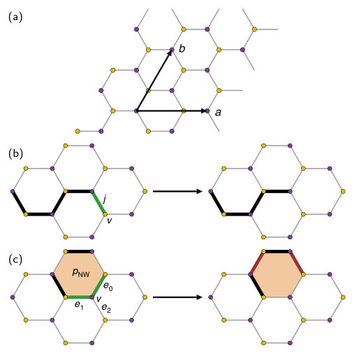
<figcaption class="paper-figure-caption"><b>Fig 1.</b> FIG. 1. Lattice geometry and flag lowering moves for the Toom-inspired model: (a) A patch of the honeycomb lattice on a torus with L = 6. The vectors ⃗a and ⃗b define the peri- odic boundary conditions, as discussed in the main text. The purple and yellow vertices represent two underlying triangular lattices. (b) Leaf correction move: For a chosen vertex, v, if only a single flag is raised among the three edges connected to v, that flag is then lowered (edge j). (c) Loop correction move: The loop correction move is only applied at purple vertices. If v is a purple vertex, there is a plaquette to the northwest of v, denoted pNW. We label the edges connected to v as shown, where e2 does not...</figcaption>
</figure>
<figure class="paper-figure-card">
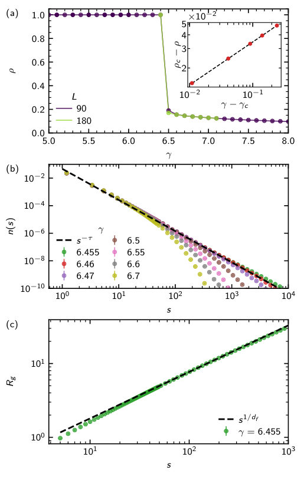
<figcaption class="paper-figure-caption"><b>Fig 2.</b> FIG. 2. Toom-inspired model data: (a) Steady-state flag den- sity for different γ at L = 90 and L = 180. Each point is av- eraged over 100 Monte Carlo trials at t = 3200 (chosen such that ρ(γ = 6.4) = 1 for all 100 trials at γ = 6.4 for each L). Initial states had ρ = 0. Inset: the average flag density for L = 750 at t = 2000. The black dashed curve is a fit of the form ρc −ρ = A(γ −γc)1−α with α = 0.61(5), ρc = 0.195(3), and γc = 6.459(3) (γc determined independently from Fig. 3). (b) Determination of the Fisher exponent, τ, near the transi- tion at γc. The number of edges in each cluster is denoted as s, while n(s) = N(s)</figcaption>
</figure>
<figure class="paper-figure-card">
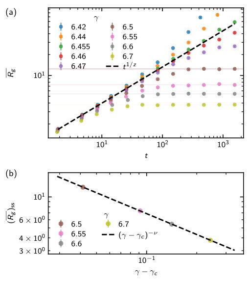
<figcaption class="paper-figure-caption"><b>Fig 3.</b> FIG. 3. More Toom-inspired model data: (a) The dynamic critical exponent, z. The mean radius of gyration over all clusters is defined as Rg = P</figcaption>
</figure>
<figure class="paper-figure-card">
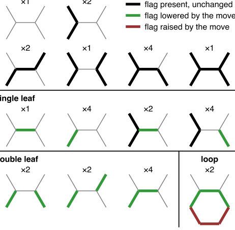
<figcaption class="paper-figure-caption"><b>Fig 4.</b> FIG. 4. Flag lowering moves for the isotropic model. For a given edge, j, all 5 edges connected to the two vertices at the endpoints of j are considered. This yields 25 = 32 possi- ble flag configurations, represented above with horizontal and vertical reflection symmetry. There are three types of moves, which do not break lattice connections and are guaranteed to never raise more flags than they lower. (i) Single leaf moves lower one flag that is connected to a vertex where it is the only raised flag. (ii) Double leaf moves lower two flags by applying leaf moves. (iii) Loop moves are only applied in a configuration where three flags can be lowered, and at most three flags are raised. These...</figcaption>
</figure>
<figure class="paper-figure-card">
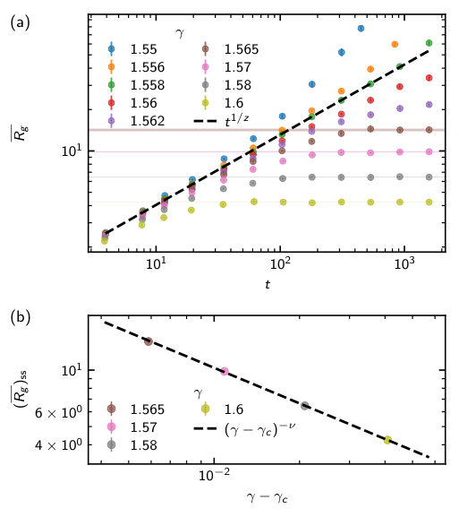
<figcaption class="paper-figure-caption"><b>Fig 5.</b> FIG. 6. More isotropic model data: (a) The dynamic critical exponent, z. The mean radius of gyration over all clusters is defined as Rg = P</figcaption>
</figure>
</div>

<p><strong>Summary.</strong> This work analyzes active lattice percolation models exhibiting complex phase transitions, identifying them as Hybrid Percolation Transitions (HPTs). By calculating critical exponents and comparing results across different model variations, the authors argue that these systems define a new universality class distinct from standard percolation theory. The research heavily relies on advanced Monte Carlo simulations to characterize the non-equilibrium critical behavior.</p>
<p><strong>Why it may be interesting.</strong> The study of non-equilibrium phase transitions in lattice models, especially those involving local constraints (like cluster preservation), provides a rich testing ground for generalized critical phenomena beyond standard equilibrium statistical mechanics.</p>
<details>
<summary>Detailed structure</summary>
<p><strong>Main problem.</strong> The paper investigates dynamic percolation models to determine if the observed phase transitions belong to a novel universality class, particularly focusing on hybrid or apparently continuous transitions.</p>
<p><strong>Main result.</strong> The critical exponents calculated for the active lattice percolation models are significantly different from known percolation transitions, suggesting the existence of a new universality class.</p>
<p><strong>Method.</strong> The authors employ extensive numerical simulations (Monte Carlo) to calculate critical exponents ($ au, d_f, 
u$) and analyze the scaling behavior of order parameters ($
ho$) near the transition point.</p>
<p><strong>Model / system.</strong> The system is a dynamic percolation model on a lattice where connections are added and removed stochastically, constrained by rules that forbid cluster splitting. Specific models include the local erasure flag model inspired by quantum error correction codes.</p>
<p><strong>Key observables.</strong> Steady-state flag density ($
ho$), percolation critical exponents ($   au, d_f, 
u$), and the time required for the order parameter to cross a threshold.</p>
<p><strong>Important parameters / regimes.</strong> The rate of stochastic moves ($\gamma$), the lattice geometry (honeycomb), and the initial state of the system ($p_0$).</p>
<p><strong>Assumptions / limitations.</strong> The analysis assumes the system reaches a steady state after a sufficiently long time, and that the observed exponents are robust across different model variations.</p>
<p><strong>Figures summary.</strong> Figures illustrate the lattice dynamics (leaf/loop moves), the dependence of $
ho$ on $\gamma$, the scaling of cluster size distributions ($n(s)$), and the convergence of fractal dimensions ($d_f$) for different model parameters.</p>
<p><strong>Paper structure.</strong> The paper progresses by first analyzing the original anisotropic model, identifying it as a Hybrid Percolation Transition (HPT). It then modifies the model to be isotropic, and finally, it analyzes the convergence of critical exponents across various parameter regimes to argue for a new universality class.</p>
</details>
<details>
<summary>Abstract</summary>
<p>We investigate a class of dynamic percolation models on a lattice, in which connections are added and removed by a set of local stochastic rules. In particular, the removal of any connection that can result in one connected cluster becoming two (or more) separate clusters is strictly forbidden. These models include and are inspired by a model for local quantum error correction for a toric code studied by Chirame, et al., PRX Quantum 6, 030363 (2025), who identified a phase transition with first-order characteristics, such as bistability and a discontinuous order parameter. We show numerically that this transition is a hybrid percolation transition (HPT), having characteristics of a continuous percolation transition such as diverging critical clusters while at the same transition having discontinuities like a first-order transition. We then modify this model to be fully isotropic, showing that the HPT remains. In both of these models, the steady state on one side of the HPT is an absorbing state; by turning on additional isotropic local stochastic moves, we remove the absorbing state and strongly suppress or remove the first-order transition, leaving an apparently continuous percolation transition. Curiously, the numerically-observed percolation critical exponents do not change significantly between the models with hybrid transitions and the model with an apparently continuous transition. These exponents are significantly different from known percolation transitions, indicating that this may be a new universality class.</p>
</details>
<p><sub><a href="#top">↑ back to top</a></sub></p>

<p><a id="paper-2610.05907"></a></p>
<h3 id="robust-diamond-quantum-sensing-in-double-quantum-4-ramsey-interferometry-by-dual-feedback-scheme"><a href="http://arxiv.org/abs/2610.05907v1">Robust Diamond Quantum Sensing in Double-Quantum 4-Ramsey Interferometry by Dual-Feedback Scheme</a></h3>
<p><strong>Authors:</strong> Yuta Araki, Takeharu Sekiguchi, Yuji Hatano, Naota Sekiguchi, Zehan Li, Chikara Shinei, Masashi Miyakawa, Takashi Taniguchi, Tokuyuki Teraji, Hiroshi Abe, Shinobu Onoda, Takeshi Ohshima, Mutsuko Hatano, Takayuki Iwasaki<br>
<strong>Type:</strong> experiment · <strong>Category:</strong> other · <strong>PDF:</strong> <a href="https://arxiv.org/pdf/2610.05907v1">https://arxiv.org/pdf/2610.05907v1</a><br>
<strong>Analysis basis:</strong> full PDF text, analyzed in chunks
<strong>Topic relevance:</strong> 🔥 <code>quantum measurements</code> <strong>4/5</strong> · <code>QC/QI experiment</code> <strong>3/5</strong> · <code>quantum optics experiment</code> <strong>2/5</strong> · <code>interference shaping light</code> <strong>1/5</strong></p>
<div class="figure-strip-hint">↔ Scroll figures horizontally</div>
<div class="paper-figures-scroll">
<figure class="paper-figure-card">
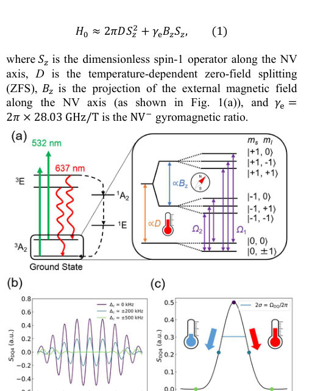
<figcaption class="paper-figure-caption"><b>Fig 1.</b> FIG 1. (a) The energy level diagram of NV⁻ ground state, illustrating the splitting due to magnetic field and temperature. Analytical solutions of the DQ 4-Ramsey signal for (b) differential-mode detuning 𝛥ୢ and (c) common-mode detuning 𝛥ୡ . 𝛺ୈ୕/2𝜋 is set at 310 kHz . The amplitude decreases for temperature shifts in both ways and almost vanishes for |𝛥ୡ|/2𝜋&gt; 400 kHz (±5 K in temperature). Here, we introduce the two-tone MW driving Hamiltonian [24]:</figcaption>
</figure>
<figure class="paper-figure-card">
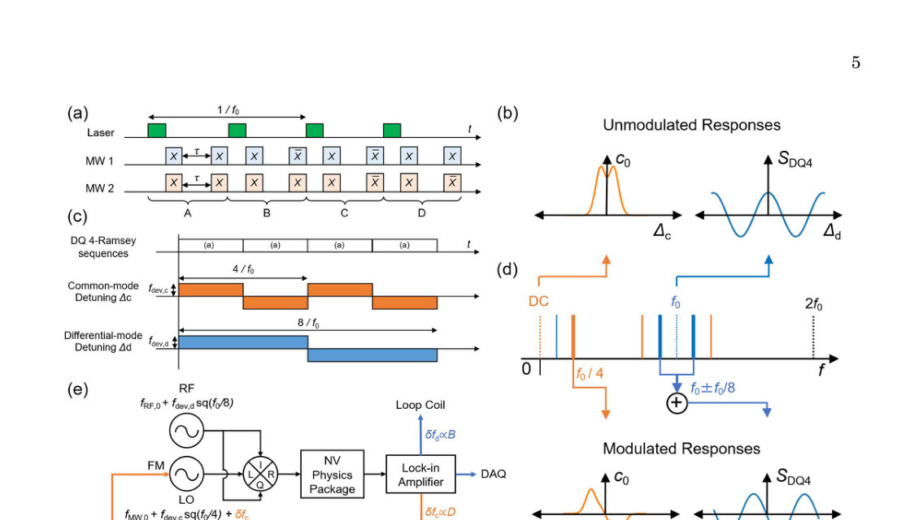
<figcaption class="paper-figure-caption"><b>Fig 2.</b> FIG. 2. Overview of the dual-feedback architecture. (a) Standard DQ 4-Ramsey sequence composed of four consecutive phase-cycling steps labeled A, B, C, and D. (b) Unmodulated DQ 4-Ramsey responses, showing the population response 𝑐଴ as a function of 𝛥ୡ and the cosine-type DQ response as a function of 𝛥ୢ. (c) Synchronized modulation scheme employing square-wave frequency deviations that remain constant within each four-step block. (d) Frequency-domain representation of the fluorescence signal and corresponding demodulated responses: a dispersive response at 𝑓଴/4 and a sine-type magnetic response at 𝑓଴± 𝑓଴/8 . (e) Schematic representation of the microwave generation and feedback setup. The 𝛥ୡ...</figcaption>
</figure>
<figure class="paper-figure-card">
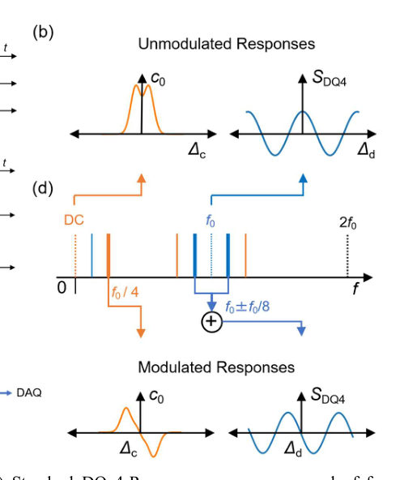
<figcaption class="paper-figure-caption"><b>Fig 3.</b> Fig. 3(a) illustrates the optical, MW, and RF experimental setup. A 532-nm laser beam was delivered through an optical fiber to the sensor head in a three-layer magnetic shield box. An optical power of 20–200 mW was focused onto the diamond using a convex lens with a focal length of 150 mm. The acousto-optic modulator (AOM) was stabilized by proportional-integral (PI) control implemented on a Red Pitaya Field-Programmable Gate Array (FPGA) platform [28]. This feedback stabilization was used to suppress 1/𝑓intensity noise of the laser. Balanced detection was implemented following the method described in Ref. [14].</figcaption>
</figure>
<figure class="paper-figure-card">
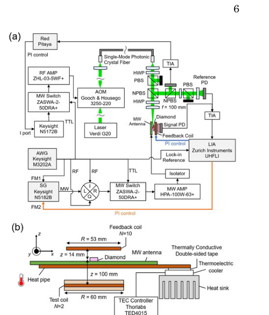
<figcaption class="paper-figure-caption"><b>Fig 4.</b> FIG. 3. Experimental setup. (a) Optical, MW, and RF setup. The laser intensity is stabilized via an AOM using an FPGA board. A photonic crystal fiber delivers the laser light to the sensor head. (b) Close-up sensor head schematic integrated with a heat pipe and coils. The magnetic field to be sensed is aligned along the z axis, [111]ୢ୧ୟ୫୭୬ୢ. The heat pipe transfers the heat generated by the TEC. A TEC controller applies a DC current (&lt; 1A) to the TEC.</figcaption>
</figure>
<figure class="paper-figure-card">
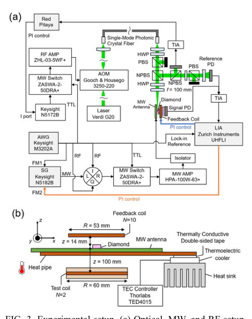
<figcaption class="paper-figure-caption"><b>Fig 5.</b> Fig. 4(a) shows the comparison between the experimental and theoretical differential-mode response of the DQ term as functions of the deviation frequency 𝑓ୢୣ୴,ୢ and detuning 𝛥ୢ. The experimental result obtained with Gaussian pulses can be</figcaption>
</figure>
</div>

<p><strong>Summary.</strong> This paper presents a novel, robust method for diamond quantum magnetometry by integrating a dual-feedback control system into Double-Quantum 4-Ramsey interferometry. This scheme allows the sensor to independently track and compensate for common- and differential-mode frequency drifts caused by temperature or magnetic noise. The successful implementation enables long-term, stable measurements with extremely low noise floors, opening pathways for detecting weak biomagnetic signals.</p>
<p><strong>Why it may be interesting.</strong> This work is highly relevant to AMO physics and quantum optics as it demonstrates advanced quantum control techniques (dual-feedback) to stabilize a solid-state quantum sensor against environmental noise, pushing the limits of measurement precision.</p>
<details>
<summary>Detailed structure</summary>
<p><strong>Main problem.</strong> The primary challenge is achieving high magnetic field sensitivity and long-term stability in diamond quantum magnetometry while compensating for environmental drifts like thermal fluctuations.</p>
<p><strong>Main result.</strong> The authors demonstrated stable continuous operation against 2.8 K temperature variations, achieving a magnetic field sensitivity of 7.0 pT/Hz^1/2 over 4 hours.</p>
<p><strong>Method.</strong> They developed and implemented a dual-feedback scheme using synchronized frequency modulation to independently track and compensate for common- and differential-mode frequency shifts.</p>
<p><strong>Model / system.</strong> The system utilizes Nitrogen-vacancy (NV) centers in diamond as quantum magnetometers, employing Double-Quantum (DQ) 4-Ramsey interferometry.</p>
<p><strong>Key observables.</strong> Magnetic field sensitivity ($  ext{pT}/\sqrt{  ext{Hz}}$), noise floor ($ ext{fT}/\sqrt{  ext{Hz}}$), and the system's response to common- and differential-mode detunings.</p>
<p><strong>Important parameters / regimes.</strong> Temperature variation (2.8 K), integration time (4 hours), and the scaling of uncertainty ($\propto 1/\sqrt{T}$).</p>
<p><strong>Assumptions / limitations.</strong> The analysis relies on deriving analytical solutions for signal response using a detuning-inclusive Hamiltonian and assuming the applicability of the dual-feedback architecture.</p>
<p><strong>Figures summary.</strong> Figures illustrate the energy level diagram and signal response for different detuning modes, while the setup diagrams detail the dual-feedback architecture and the complex microwave/RF mixing components used.</p>
<p><strong>Paper structure.</strong> The paper progresses from theoretical derivation of signal response to detuning, introduces the limitations of standard sensing, proposes the dual-feedback scheme, and concludes with experimental validation showing stable, long-term operation.</p>
</details>
<details>
<summary>Abstract</summary>
<p>We developed a highly sensitive and long-term stable diamond quantum magnetometer by integrating a dual-feedback system that compensates for common- and differential-mode frequency shifts in double-quantum (DQ) 4-Ramsey interferometry. Detecting extremely weak magnetic-field signals requires extensive signal accumulation to enhance the signal-to-noise ratio. However, deviations from the optimal operating frequencies caused by thermal drift or environmental magnetic noise severely hinder the long-term stability of such a sensing system. To overcome the limitation, we first derived analytical solutions for the signal response to common- and differential-mode detunings based on a detuning-inclusive Hamiltonian to theoretically clarify the robustness limit in DQ 4-Ramsey sensing. Guided by this theoretical model, we introduced synchronized frequency modulation and a dual-feedback scheme to independently track and compensate for these frequency shifts while maintaining an optimal magnetic-field response. The proposed method enabled stable continuous operation against temperature variations of 2.8 K. By maintaining a magnetic field sensitivity of 7.0 pT/Hz^1/2 in the frequency range of 5-100 Hz for a prolonged duration of 4 hours, we achieved an extremely low noise floor of 64 fT/Hz^1/2. During prolonged continuous sensing, the system exhibited the expected 1/T^1/2 scaling with integration time T, and prevented both the underestimation of amplitude and waveform distortion. These results establish a robust approach for long-term DQ 4-Ramsey diamond magnetometry and demonstrate its potential for detecting weak biomagnetic signals.</p>
</details>
<p><sub><a href="#top">↑ back to top</a></sub></p>

<p><a id="paper-2610.03936"></a></p>
<h3 id="an-absorbing-state-model-with-an-emergent-ising-transition"><a href="http://arxiv.org/abs/2610.03936v1">An Absorbing State Model with an Emergent Ising Transition</a></h3>
<p><strong>Authors:</strong> Shen Ai, Dov Levine, Paul Chaikin<br>
<strong>Type:</strong> theory · <strong>Category:</strong> statistical mechanics · <strong>PDF:</strong> <a href="https://arxiv.org/pdf/2610.03936v1">https://arxiv.org/pdf/2610.03936v1</a><br>
<strong>Analysis basis:</strong> full PDF text, analyzed in chunks
<strong>Topic relevance:</strong> 🔥 <code>non-equilibrium universality</code> <strong>4/5</strong> · <code>driven-dissipative phase transition</code> <strong>3/5</strong> · <code>Frenkel-Kontorova</code> <strong>1/5</strong> · <code>methods for driven-dissipative</code> <strong>1/5</strong></p>
<div class="figure-strip-hint">↔ Scroll figures horizontally</div>
<div class="paper-figures-scroll">
<figure class="paper-figure-card">
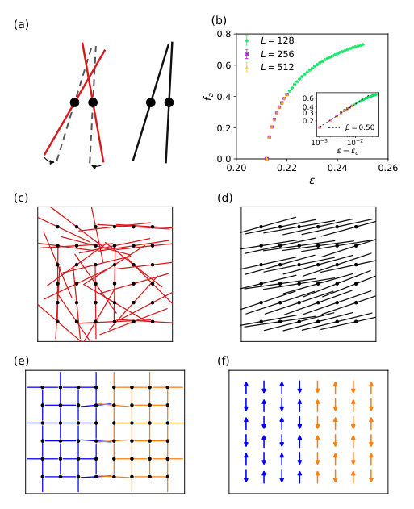
<figcaption class="paper-figure-caption"><b>Fig 1.</b> FIG. 1. (a) Needles with half-length r = 4, centers fixed on a square lattice with spacing 1 ; BRO kick after which overlap- ping particles become inactive. (b) Absorbing–active transi- tion at r = 2: fraction of active particles fa versus kick size ϵ (in radians); inset log–log plot with β = 0.5 at ϵc = 0.212. (c,d) Representative configurations at r = 2 colored by activ- ity (red: active, black: inactive, as in (a)): (c) ϵ = 1, active random phase; (d) ϵ = 0.2, absorbing phase with nematic order. (e,f) Ideal reference states for the checkerboard (CB) phase (e) and antiferromagnetic Ising model (f); blue and or- ange denote the two phases; the boundary between the two phases corresponds to...</figcaption>
</figure>
<figure class="paper-figure-card">
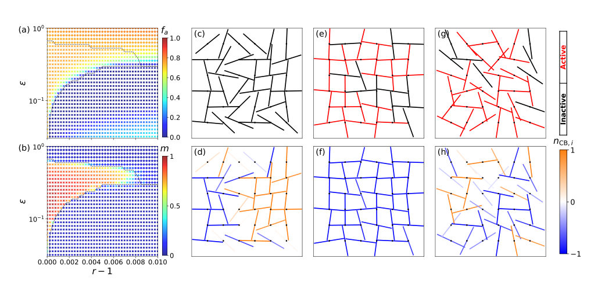
<figcaption class="paper-figure-caption"><b>Fig 2.</b> FIG. 2. Phase diagrams in the (r −1, ϵ) plane, with markers colored by two order parameters (a) the fraction of active particles fa and (b) the CB order parameter m = |⟨nCB,i⟩|. Different markers denote the three phases: absorbing phase (squares), active CB phase (crosses), and active random phase (diamonds). Each point is an independent simulation result starting from random initial conditions. Dashed lines are guides to the eye for the phase boundaries. The lower phase boundary corresponds to a continuous absorbing-to-active transition, whereas the upper phase boundary separating the active CB and active random phases belongs to the Ising universality class. (c–h) Representative...</figcaption>
</figure>
<figure class="paper-figure-card">
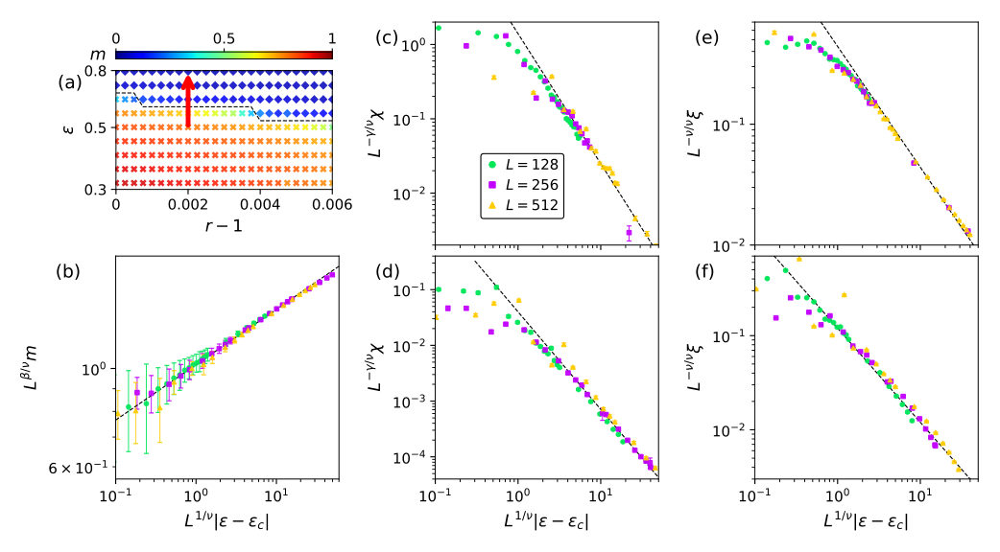
<figcaption class="paper-figure-caption"><b>Fig 3.</b> FIG. 3. Finite-size scaling analysis near the upper phase boundary. (a) Phase diagram in the (r −1, ϵ) plane, colored by m; the red arrow indicates the cut at r −1 = 0.002 used for the scaling analysis. Results are shown for linear system sizes L = 128, 256, and 512, as indicated by the shared legend. All scaling plots use the critical point ϵc = 0.5845. (b) Rescaled CB order parameter Lβ/νm on the CB side. (c,d) Rescaled susceptibility L−γ/νχ on the random side (c) and the CB side (d). (e,f) Rescaled correlation length L−1ξ on the random side (e) and the CB side (f). Dashed lines indicate the expected two-dimensional Ising critical exponents, γ/ν = 7/4, β/ν = 1/8, and ν = 1. The data...</figcaption>
</figure>
<figure class="paper-figure-card">
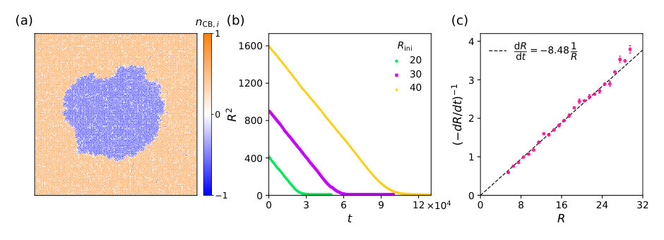
<figcaption class="paper-figure-caption"><b>Fig 4.</b> FIG. 4. (a) Example configuration with a circular center phase (nCB,i = −1) surrounded by the outer phase (nCB,i = +1); needles are colored by the local CB order parameter nCB,i. (b) Center-phase size dynamics: independent of the initial center size, the squared effective radius R2 of the center phase decays linearly with time. (c) Direct verification of surface-tension behavior: (−dR/dt)−1 versus R; the dashed line is a fit showing expected coarsening behavior; d/dt is evaluated per 103</figcaption>
</figure>
</div>

<p><strong>Summary.</strong> This work analyzes a dynamical model of repulsive needles on a lattice, which exhibits multiple phase transitions. The most notable finding is that the transition between ordered and disordered active states belongs to the 2D Ising universality class. The study rigorously confirms this using finite-size scaling and demonstrates that the system operates far from equilibrium.</p>
<p><strong>Why it may be interesting.</strong> The emergence of classical critical behavior (Ising universality) from a purely kinetic, non-equilibrium system driven by steric repulsion is a rich topic for understanding how symmetry can be imposed by geometry in complex many-body dynamics.</p>
<details>
<summary>Detailed structure</summary>
<p><strong>Main problem.</strong> The study investigates phase transitions in a non-equilibrium, dynamical model of repulsive needles, specifically focusing on the emergence of Ising critical behavior in an ordering transition.</p>
<p><strong>Main result.</strong> The system exhibits two transitions: an absorbing/active transition and an ordering transition between active phases, where the latter displays critical exponents identical to the 2D Ising model.</p>
<p><strong>Method.</strong> The analysis employs dynamical simulations, finite-size scaling, and the calculation of non-equilibrium quantities like entropy production to characterize the phase boundaries and critical behavior.</p>
<p><strong>Model / system.</strong> The model consists of repulsive needles fixed on a 2D square lattice. Dynamics are driven by synchronous, repulsive rotations ($\epsilon$ kick size) when needles overlap, leading to active states.</p>
<p><strong>Key observables.</strong> Fraction of active particles ($f_a$), local and global CB order parameters ($m$), susceptibility, and correlation length.</p>
<p><strong>Important parameters / regimes.</strong> Kick size ($\epsilon$), needle length ($2r$), and lattice geometry (square lattice).</p>
<p><strong>Assumptions / limitations.</strong> The system is fundamentally out of equilibrium, as evidenced by non-zero entropy production, and the Ising symmetry is emergent from the lattice geometry rather than inherent spin symmetry.</p>
<p><strong>Figures summary.</strong> Figures illustrate phase diagrams mapping the three identified phases, finite-size scaling confirming 2D Ising exponents, and time evolution showing linear decay of domain size squared ($R^2 \propto -Kt$).</p>
<p><strong>Paper structure.</strong> The paper analyzes the phase diagram in parameter space, first identifying the absorbing/active transition, and then focusing on the upper ordering transition, which is characterized by scaling analysis and coarsening dynamics.</p>
</details>
<details>
<summary>Abstract</summary>
<p>We study a dynamical model of repulsive needles with centers fixed on a square lattice. Needles that overlap are active and receive a repulsive rotation $ θ\in [0,ε)$; needles with no overlap do not move. This model exhibits an absorbing state transition. Nematic order was observed for long needles. For a range of needle lengths and $ε$, the system self-organizes into a state with checkerboard symmetry. As $ε$ is increased, this phase melts and becomes disordered. Remarkably, we find that this phase boundary exhibits critical exponents identical to those of the equilibrium 2D Ising model.</p>
</details>
<p><sub><a href="#top">↑ back to top</a></sub></p>

<p><a id="paper-2610.05005"></a></p>
<h3 id="arbitrary-phase-cz-gate-and-remote-readout-across-spatially-separated-superconducting-nodes"><a href="http://arxiv.org/abs/2610.05005v1">Arbitrary-phase CZ gate and remote readout across spatially separated superconducting nodes</a></h3>
<p><strong>Authors:</strong> Anatoly Kulikov, Josua D. Schär, Alonso Hernández-Antón, Aleksandr Grigorev<br>
<strong>Type:</strong> experiment · <strong>Category:</strong> quantum information and computing · <strong>PDF:</strong> <a href="https://arxiv.org/pdf/2610.05005v1">https://arxiv.org/pdf/2610.05005v1</a><br>
<strong>Analysis basis:</strong> full PDF text, analyzed in chunks
<strong>Topic relevance:</strong> 🔥 <code>QC/QI experiment</code> <strong>4/5</strong> · <code>quantum measurements</code> <strong>3/5</strong> · <code>quantum optics experiment</code> <strong>2/5</strong></p>
<div class="figure-strip-hint">↔ Scroll figures horizontally</div>
<div class="paper-figures-scroll">
<figure class="paper-figure-card">
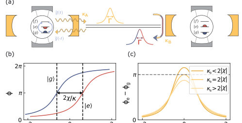
<figcaption class="paper-figure-caption"><b>Fig 1.</b> FIG. 1. Bidirectional photon transfer protocol. (a) A schematic representation of the protocol. Node A emits a photon by inducing a tunable coupling ˜g(t) between the emitter qubit and the transfer resonator. The photon travels to node B, gets reflected off it and ac- quires a conditional phase in the process. Then node A reabsorbs the photon by applying an inverse coupling ˜g(−t). (b) Phase acquired by a communication microwave photon as a function of its detuning ∆ from the remote transfer resonator frequency ωRB,|g⟩. The two curves correspond to the remote qubit being in the ground (blue) and excited (red) state. (c) Conditional phase acquired by the photon. The three curves correspond...</figcaption>
</figure>
<figure class="paper-figure-card">
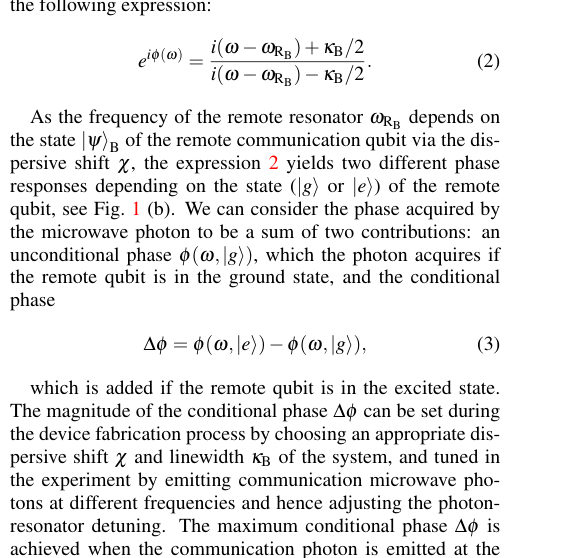
<figcaption class="paper-figure-caption"><b>Fig 2.</b> Figure 1 (c) depicts the conditional phase ∆φ as a function of the photon-resonator detuning for a fixed dispersive shift χ and a variable linewidth κB. Tuning the conditional phase to π allows us to imple- ment a remote controlled-Z (CZ) gate between the two nodes of the network, and having the ability to choose the con- ditional phase at will enables an arbitrary-phase controlled- phase (CPHASE) gate. Hence it is important to be able to emit and reabsorb microwave photons at different frequencies from node A. The bidirectional photon transfer protocol is characterized by its transfer efficiency, which we define as the population of the |f⟩state of the emitter qubit recovered after...</figcaption>
</figure>
<figure class="paper-figure-card">
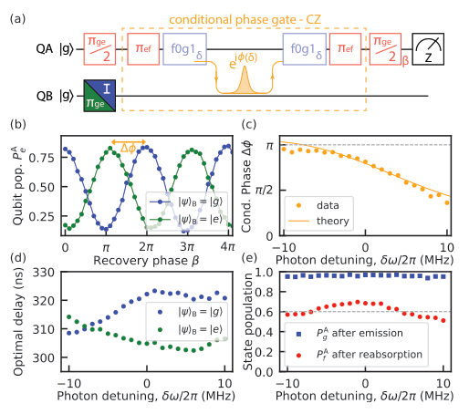
<figcaption class="paper-figure-caption"><b>Fig 3.</b> FIG. 3. Conditional phase tunability. (a) Gate sequence for the characterization of the conditional phase. Single-qutrit gates in trans- mon A in red, f0−g1 emission and absorption operations in light blue, photon in yellow, readout operation in black, single-qubit gates in transmon B in dark blue/green. (b) Two-curve method for measur- ing the conditional phase ∆φ of the communication photon; see text for details. (c) Conditional phase ∆φ acquired by the communication photon as a function of the photon detuning δω from the resonator frequency ωR. Markers are measured data; solid line is the theoreti- cal prediction from the δω = 0 point and equation (2). (d) Optimal reabsorption delay of...</figcaption>
</figure>
<figure class="paper-figure-card">
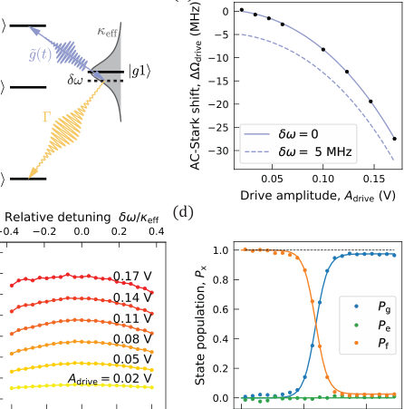
<figcaption class="paper-figure-caption"><b>Fig 4.</b> FIG. 2. Principles of photon emission. (a) Energy level diagram of the photon emission process. The joint eigenstates of the transmon- resonator system are depicted in solid black lines. The Raman |f0⟩−|g1⟩transition is driven with a modulated microwave pulse, creating a time-dependent coupling ˜g(t) (blue). The drive is detuned by δω from the bare |f0⟩−|g1⟩transition frequency (dashed line). The resonator decays into the waveguide, yielding a travelling mi- crowave photon with a linewidth Γ (orange). (b) AC Stark shift cal- ibration result with Ωdrive = 5.834GHz. The markers correspond to the calibration data, the solid line is a fit with an even polynomial, and the dashed line shows the...</figcaption>
</figure>
<figure class="paper-figure-card">
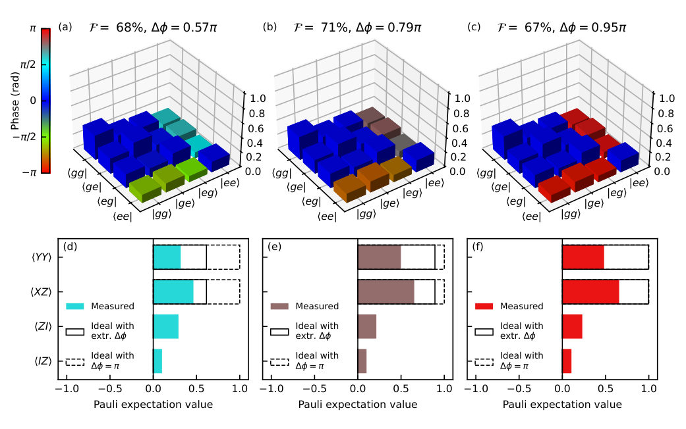
<figcaption class="paper-figure-caption"><b>Fig 5.</b> FIG. 4. Arbitrary-phase controlled-Z gate at different photon detunings. (a)–(c) Reconstructed two-qubit density matrices after applying the remote controlled-phase gate to the initial state |++⟩for photon detunings of δω = −5 MHz (a), δω = 0 (b) and δω = 5 MHz (c). The extracted state fidelities are F = 68%, 71%, and 67%, and the corresponding conditional phases are ∆φ = 0.57π, 0.79π, and 0.95π. The change in the phase of the off-diagonal elements of the density matrices demonstrates tunability of the remote controlled-phase operation. (d)–(f) Selected Pauli expectation values extracted from the same tomographic data. Measured values are compared with the ideal output state for the...</figcaption>
</figure>
</div>

<p><strong>Summary.</strong> This paper demonstrates a method to implement an arbitrary-phase CZ gate and perform remote readout between two physically separated superconducting quantum nodes. This is achieved by sending microwave photons across a long cryogenic link, where the photon acquires a state-dependent phase upon reflection. The key breakthrough is the ability to tune this phase without active participation from the remote node, advancing distributed quantum computing capabilities.</p>
<p><strong>Why it may be interesting.</strong> The work provides a concrete, hardware-based realization of quantum networking primitives (entangling gates and remote measurement) using superconducting circuits, which is highly relevant for quantum information theorists designing network protocols.</p>
<details>
<summary>Detailed structure</summary>
<p><strong>Main problem.</strong> The core challenge is establishing a complete set of quantum gates across spatially separated quantum nodes for distributed quantum computation and communication.</p>
<p><strong>Main result.</strong> The authors successfully demonstrated an arbitrary-phase CZ gate and remote single-shot readout using a bidirectional photon transfer protocol across superconducting nodes.</p>
<p><strong>Method.</strong> The protocol relies on tuning the conditional phase acquired by a microwave photon reflected off a remote qubit by varying the photon's frequency detuning.</p>
<p><strong>Model / system.</strong> The system uses a two-node superconducting circuit QED network (A and B) connected by a 30-m cryogenic link, employing frequency-tunable transmon qubits.</p>
<p><strong>Key observables.</strong> Conditional phase (Delta_phi), readout fidelity, and the population of the remote qubit.</p>
<p><strong>Important parameters / regimes.</strong> Photon detuning (delta_omega), coupling strength (tilde_g), and the required number of repetitions for error correction.</p>
<p><strong>Assumptions / limitations.</strong> The primary sources of infidelity are attributed to microwave components, and the variable-frequency emission method is presented as a practical first-order solution.</p>
<p><strong>Figures summary.</strong> Figures illustrate the bidirectional photon transfer protocol, the dependence of the conditional phase on detuning, and the improvement of readout fidelity using error correction techniques like majority voting and weighted decoding.</p>
<p><strong>Paper structure.</strong> The work progresses by first establishing the basic protocol for the CZ gate, then detailing the technique for tuning the conditional phase via variable-frequency emission, and finally demonstrating robust remote readout using error correction codes.</p>
</details>
<details>
<summary>Abstract</summary>
<p>Establishing a complete set of gates across spatially separated quantum nodes is fundamental for distributed quantum computation and communication networks. One of the approaches to do so consists of employing a superconducting device as a universal quantum node that is capable of storing and processing quantum information, and traveling microwave photons as means of communication. In this work, we realize an entangling gate across a primitive two-node superconducting circuit QED network consisting of two dilution cryostats, A and B, connected via a 30-m-long cryogenic quantum link. We perform a bidirectional photon transfer protocol, where a microwave photon emitted by the communication qubit at A acquires a conditional phase based on the state of qubit B. We vary the communication photon frequency, hence tuning the conditional phase acquired during the reflection off the remote node, effectively implementing an arbitrary-phase CZ gate. We use this entangling operation to perform single-shot readout of the qubit in node B from node A. An interesting feature of our scheme is that it does not require precise synchronization of the active node with the remote node; in particular, remote readout can be performed without any active participation by the remote node. These protocols add to the quantum communication toolbox with superconducting circuits and provide a way of realizing basic distributed quantum computing operations.</p>
</details>
<p><sub><a href="#top">↑ back to top</a></sub></p>

<p><a id="paper-2610.05934"></a></p>
<h3 id="rotation-breaks-kibble-zurek-universality"><a href="http://arxiv.org/abs/2610.05934v1">Rotation Breaks Kibble-Zurek Universality</a></h3>
<p><strong>Authors:</strong> Shiva Dwivedi, Kenichi Kasamatsu, Adolfo Del Campo, Mithun Thudiyangal<br>
<strong>Type:</strong> theory · <strong>Category:</strong> quantum gases · <strong>PDF:</strong> <a href="https://arxiv.org/pdf/2610.05934v1">https://arxiv.org/pdf/2610.05934v1</a><br>
<strong>Analysis basis:</strong> full PDF text, analyzed in chunks
<strong>Topic relevance:</strong> 🔥 <code>non-equilibrium universality</code> <strong>4/5</strong> · <code>analog quantum simulation</code> <strong>3/5</strong> · <code>driven-dissipative phase transition</code> <strong>1/5</strong> · <code>methods for driven-dissipative</code> <strong>1/5</strong></p>
<div class="figure-strip-hint">↔ Scroll figures horizontally</div>
<div class="paper-figures-scroll">
<figure class="paper-figure-card">

<figcaption class="paper-figure-caption"><b>Fig 1.</b> Figure 1. Response time of the order parameter in a BEC transition and KZ scaling for a trapped condensate at [A] fixed rotation and for [B] a ramping rotational frequency. The norm of the condensate ¯n = 1 A R</figcaption>
</figure>
<figure class="paper-figure-card">

<figcaption class="paper-figure-caption"><b>Fig 2.</b> Figure 2. Snapshots of the condensate at equilibration time teq (marked with diamonds in Fig. 1) for a quench time τQ = 100 and different rotation frequencies, indicated on the lower right of each plot. Black circles identify co-rotating vortices, whereas the red squares mark counter-rotating vortices. Panels (i)-(iii) correspond to µ-quenches and (iv)-(vi) to (µ, Ω)-quenches. The plots are shown for a single trajectory (R = 1). The black dashed circle corresponds to 0.97R, beyond which vortices are not counted.</figcaption>
</figure>
<figure class="paper-figure-card">

<figcaption class="paper-figure-caption"><b>Fig 3.</b> Figure 3. (i) Emergence of rigid-body rotation and (ii) post-quench density profiles for a trapped 2D BEC at [A] fixed rotation and for [B] ramping rotational frequency. (i) Time evolution of the spontaneously formed vortex count nv (solid lines) and scaled macroscopic angular momentum 2⟨Lz⟩(dashed lines) with a quench time τQ = 100, for [A] Ωand [B] Ωf ∈ {0, 0.1, . . . , 0.5}. Vertical lines denote the equilibrium time teq (marked with solid diamonds in Fig. 1[A-B](i)-(iii)). Horizontal dotted and dot-dashed lines mark the corresponding Feynman-Onsager (FO) limits, [A] nv ≈ΩR2 and [B] nv ≈ΩfR2. The plots are averaged over R = 50 trajectories. The shaded regions show the standard deviation...</figcaption>
</figure>
<figure class="paper-figure-card">

<figcaption class="paper-figure-caption"><b>Fig 4.</b> Figure 4. Chiral bias in a rotating trap. |n+−n−|</figcaption>
</figure>
<figure class="paper-figure-card">

<figcaption class="paper-figure-caption"><b>Fig 5.</b> Figure 5. Jumps in the norm of (µ, Ω)-quenches at larger τQ. (a) Jumps in norm of the condensate for Ωf = 0.5, τQ = 400. (i)-(ix) density profile of the 2D BEC at the times of evolution highlighted in (a).</figcaption>
</figure>
</div>

<p><strong>Summary.</strong> This research demonstrates that applying trap rotation to a Bose-Einstein condensate during a quench process breaks the universal scaling predicted by the Kibble-Zurek mechanism. By simulating the system dynamics, the authors show that the macroscopic angular momentum constraint forces the vortex density toward the Feynman-Onsager limit, overriding the expected universal scaling laws.</p>
<p><strong>Why it may be interesting.</strong> This work provides a concrete example of how an external, non-critical parameter (rotation) can fundamentally alter the universal scaling laws governing non-equilibrium phase transitions in quantum many-body systems, offering a new control knob for critical dynamics.</p>
<details>
<summary>Detailed structure</summary>
<p><strong>Main problem.</strong> The paper investigates how the presence of trap rotation fundamentally alters the universal scaling laws predicted by the Kibble-Zurek mechanism during the quench process that forms a Bose-Einstein condensate.</p>
<p><strong>Main result.</strong> Trap rotation breaks Kibble-Zurek universality, causing the vortex number to be dictated by the Feynman-Onsager limit rather than the quench time scaling. The resulting vortex structure tends toward a vortex-glass phase.</p>
<p><strong>Method.</strong> The study employs stochastic Gross-Pitaevskii simulations to model the time evolution of the condensate during controlled quenches, comparing results for rotating versus non-rotating systems.</p>
<p><strong>Model / system.</strong> The physical system is a 2D Bose-Einstein condensate undergoing a finite-time quench. The dynamics are governed by the Stochastic Gross-Pitaevskii equation, incorporating terms for trapping potential, rotation ($\Omega$), and stochastic noise.</p>
<p><strong>Key observables.</strong> Average vortex number ($\langle n_v 
angle$), crossover time ($ar{t}_{eq}$), L-defect density ($
ho_{L   ext{-def}}$), and the condensate norm ($ar{n}(t)$).</p>
<p><strong>Important parameters / regimes.</strong> Quench time ($  au_Q$), final rotation frequency ($\Omega_f$), and the critical exponents associated with KZ scaling.</p>
<p><strong>Assumptions / limitations.</strong> The analysis assumes the applicability of the SGPE model and relies on fitting functional forms for the crossover time to extract scaling exponents.</p>
<p><strong>Figures summary.</strong> Figures illustrate the time evolution of vortex counts and density profiles, comparing results across different quench protocols (fixed vs. ramping rotation) and showing structural analysis via the structure factor $S(k)$.</p>
<p><strong>Paper structure.</strong> The paper systematically compares quench protocols (Case I: fixed $\Omega$; Case II: ramping $\Omega$) to measure the crossover time ($ar{t}_{eq}$) and defect density. It first establishes the expected KZ scaling, then demonstrates the deviation caused by the angular momentum constraint imposed by rotation, concluding with structural characterization of the resulting vortex lattice.</p>
</details>
<details>
<summary>Abstract</summary>
<p>We show that trap rotation overrides Kibble-Zurek (KZ) universality when a 2D Bose-Einstein condensate forms via a finite-time quench. In stochastic Gross-Pitaevskii simulations, the rotation-induced chiral bias drives the vortex number close to the Feynman-Onsager (FO) value, independent of the quench time. Ramping up rotation with the quench restores the KZ scaling at low frequencies, with vortex numbers below the FO value. The vortices form a disordered lattice that a pinning potential can order into an Abrikosov lattice, even at low rotation. Trap rotation thus offers a control knob for critical dynamics.</p>
</details>
<p><sub><a href="#top">↑ back to top</a></sub></p>

<p><a id="paper-2610.06574"></a></p>
<h3 id="ct-bmps-approximate-tensor-network-contraction-with-boundary-mps-on-contraction-trees"><a href="http://arxiv.org/abs/2610.06574v1">CT-bMPS: Approximate Tensor Network Contraction with Boundary MPS on Contraction Trees</a></h3>
<p><strong>Authors:</strong> Hidetaka Manabe, Feng Pan<br>
<strong>Type:</strong> theory · <strong>Category:</strong> numerical methods · <strong>PDF:</strong> <a href="https://arxiv.org/pdf/2610.06574v1">https://arxiv.org/pdf/2610.06574v1</a><br>
<strong>Analysis basis:</strong> full PDF text, analyzed in chunks
<strong>Topic relevance:</strong> 🔥 <code>methods for driven-dissipative</code> <strong>4/5</strong> · <code>analog quantum simulation</code> <strong>3/5</strong></p>
<div class="figure-strip-hint">↔ Scroll figures horizontally</div>
<div class="paper-figures-scroll">
<figure class="paper-figure-card">

<figcaption class="paper-figure-caption"><b>Fig 1.</b> Figure 1: CT-bMPS overview. The input TN is shown on the lower plane; the contraction tree above it groups subsets of its tensors. Each tree edge carries a boundary MPS rather than a dense tensor. Messages in both directions represent the two complementary parts of the TN. The opposite message serves as an environment for local truncation, and pairing the two messages gives the scalar.</figcaption>
</figure>
<figure class="paper-figure-card">

<figcaption class="paper-figure-caption"><b>Fig 2.</b> Figure 2: Ordinary CT-bMPS. (a) Two incoming boundary MPS messages A and B form an outgoing message C at a contraction tree node. (b) Four local index patterns around the core tensor T. Indices L and R occur in only one input and survive in C. An internal index I is summed and has no output site. A shared hyperedge H with an outside owner survives as one site of C. Dashed colored input sites indicate transfer into the solid output site.</figcaption>
</figure>
<figure class="paper-figure-card">

<figcaption class="paper-figure-caption"><b>Fig 3.</b> Figure 3: Environment CT-bMPS. (a) The opposite boundary MPS provides the environment E for combining the incoming messages A and B. (b) Local truncation at the cut between j and k. Contracting the tensors to the left of the cut gives K, while Q is formed from the core tensor T.</figcaption>
</figure>
<figure class="paper-figure-card">

<figcaption class="paper-figure-caption"><b>Fig 4.</b> Figure 4: The 6 × 6 × 6 Ising model at β = 0.3. Relative scalar error is plotted against (a) contraction time and (b) peak process RSS. FLOPs denotes the CT-bMPS path obtained by simulated annealing to minimize exact contraction FLOPs; xyz denotes a geometric sweep of the lattice. Markers indicate χ. CT-bMPS uses native spin hyperedges; HAC and CATN use pairwise representations.</figcaption>
</figure>
<figure class="paper-figure-card">

<figcaption class="paper-figure-caption"><b>Fig 5.</b> Figure 4 shows the results for the 6 × 6 × 6 Ising model. We quantify the relative error by</figcaption>
</figure>
</div>

<p><strong>Summary.</strong> This paper introduces CT-bMPS, a scalable approximation technique for contracting complex, general closed tensor networks. By representing boundaries as MPS and incorporating an 'environment' message, it significantly improves accuracy while maintaining polynomial computational scaling. This framework is highly valuable for simulating diverse quantum systems, from statistical mechanics models to quantum error correction codes.</p>
<p><strong>Why it may be interesting.</strong> This work provides a powerful, general-purpose numerical tool for simulating quantum many-body systems whose Hamiltonians or partition functions can be mapped onto complex tensor network structures, which is crucial for simulating dynamics beyond simple 1D chains.</p>
<details>
<summary>Detailed structure</summary>
<p><strong>Main problem.</strong> The paper addresses the computational challenge of exactly contracting general closed tensor networks (TNs), which is generally #P-hard.</p>
<p><strong>Main result.</strong> The proposed CT-bMPS framework provides a general and scalable approximation method that improves accuracy and efficiency over existing techniques for complex TN contractions.</p>
<p><strong>Method.</strong> It uses a contraction tree structure and represents boundary tensors as Matrix Product States (MPS), incorporating an 'environment' (opposite MPS message) to guide local compression and improve accuracy.</p>
<p><strong>Model / system.</strong> The method is general, applicable to any system formulated as a closed TN, including Ising partition functions, random TNs, kicked Ising dynamics, and quantum error correction decoding.</p>
<p><strong>Key observables.</strong> Relative error, logical error rates (in QEC), contraction time, and computational FLOPs.</p>
<p><strong>Important parameters / regimes.</strong> Bond dimension ($\chi$), network size ($L$), and the choice of contraction tree/index order.</p>
<p><strong>Assumptions / limitations.</strong> The accuracy depends on the choice of the contraction tree and the global index order; the environment update procedure introduces memory overhead.</p>
<p><strong>Figures summary.</strong> Figures illustrate the mechanism of CT-bMPS contraction using contraction trees and boundary MPS messages, comparing its performance against ordinary contraction methods for the Ising model.</p>
<p><strong>Paper structure.</strong> The paper introduces CT-bMPS, details its use of contraction trees and environment-based MPS representations, benchmarks it on various physical models (Ising, QEC), and compares its performance metrics (accuracy vs. cost) against state-of-the-art methods.</p>
</details>
<details>
<summary>Abstract</summary>
<p>We introduce contraction tree boundary matrix product states (CT-bMPS), a scalable approximate contraction method for general closed tensor networks. CT-bMPS represents the boundary tensor and its complementary environment at each edge of a contraction tree as matrix product states. This representation allows local compression based on a reduced transition matrix to incorporate environment information along arbitrary contraction trees, while keeping the time and memory costs polynomial in the network size and bond dimension. We benchmark the method on a variety of models and applications, including Ising partition functions, random tensor networks, kicked Ising dynamics, and quantum error correction decoding. These benchmarks demonstrate improved accuracy and computational efficiency over existing general-purpose approximate contraction methods, together with the ability to handle larger and more complex networks. Optimized contraction trees and environment updates substantially improve accuracy without increasing the bond dimension. These results establish CT-bMPS as a general and scalable approximation framework with flexible contraction orders and environment-based compression for a wide range of applications.</p>
</details>
<p><sub><a href="#top">↑ back to top</a></sub></p>

<p><a id="paper-2610.04063"></a></p>
<h3 id="energy-filtered-readout-preserves-gap-enhanced-sensing-in-interacting-quantum-dots"><a href="http://arxiv.org/abs/2610.04063v1">Energy-filtered readout preserves gap-enhanced sensing in interacting quantum dots</a></h3>
<p><strong>Authors:</strong> Shirwan Abdullah<br>
<strong>Type:</strong> theory · <strong>Category:</strong> other · <strong>PDF:</strong> <a href="https://arxiv.org/pdf/2610.04063v1">https://arxiv.org/pdf/2610.04063v1</a><br>
<strong>Analysis basis:</strong> full PDF text, analyzed in chunks
<strong>Topic relevance:</strong> 🔥 <code>quantum measurements</code> <strong>4/5</strong> · <code>correlated / nonlocal dissipation</code> <strong>1/5</strong> · <code>driven-dissipative phase transition</code> <strong>1/5</strong> · <code>methods for driven-dissipative</code> <strong>1/5</strong></p>
<div class="figure-strip-hint">↔ Scroll figures horizontally</div>
<div class="paper-figures-scroll">
<figure class="paper-figure-card">

<figcaption class="paper-figure-caption"><b>Fig 1.</b> Figure 1. The crossover (p = 200, d = 8, contact interaction). (a) Gap of the lowest odd state of the interacting pair, followed continuously, and of a single electron in the same confinement, as functions of the confinement range R. The dotted line marks the matched gap of 181 µeV; the circle and the square mark the working points. (b) Transition dipole to the same state. Between R = 8.01 and 8.06 this single state carries more than 92% of the QFI for the field (99.95% at the working point). The single electron opens its gap by delocalising and loses its dipole, whereas the pair opens the same gap through its even anticrossing and keeps it.</figcaption>
</figure>
<figure class="paper-figure-card">

<figcaption class="paper-figure-caption"><b>Fig 2.</b> Figure 2. Bias sweep at the working gap (∆= 181 µeV), 100 mK and λ = 50 µeV. (a) Field sensitivity F−1/2 mean for the point contact and for a sensor dot of width Γ = 20 µeV, with the level position optimised at each bias. (b) Excited population pf of the probe. The dotted line marks the emission threshold eV = ∆.</figcaption>
</figure>
<figure class="paper-figure-card">

<figcaption class="paper-figure-caption"><b>Fig 3.</b> Figure 3. Mean-current information rate against the crossover gap, tuned by the interaction strength (g = 0.7–8), divided by (µX0 f )2 and normalised to its value at g = 1 (∆= 182 µeV). Sensor dot: Γ = λ = 20 µeV; point contact: λ = 50 µeV; T1 = 16 ns; bias and level re-optimised at each gap. Filled markers: 10 mK; open markers: 100 mK; crosses: points below the sensor-dot floor, excluded from the fits. Numbers in brackets are the fitted exponents. The dashed black line is the closed-system QFI, FQ/X2 0f ∝∆−2, and the dotted lines are the zero-temperature limits dominated by the detector.</figcaption>
</figure>
<figure class="paper-figure-card">

<figcaption class="paper-figure-caption"><b>Fig 4.</b> Figure 4. Range of validity of the two laws, at the matrix elements µ, δ and X0f of the working point, on a 25-point scan of the gap. Sensor dots: λ = 20 µeV; point contact: λ = 50 µeV in (a) and (c), 20 µeV in (b). (a) Local exponent of the optimised information rate. (b) Sensitivity gain of the sensor dot over the point contact at equal coupling; faded segments, here and in (a), mark points at which a detector fails the rate criterion, and the dotted line marks the working gap. (c) The rate criterion ¯h(Γ↑+Γ↓)/∆, with the threshold 0.1 dotted.</figcaption>
</figure>
<figure class="paper-figure-card">

<figcaption class="paper-figure-caption"><b>Fig 5.</b> Figure 5. Best field sensitivity of each detector when the excited population of the probe is constrained to pf ≤pmax, at the working gap, with λ = Γ = 20 µeV, T1 = 16 ns and a bias ceiling of 1 mV. Open symbols: unconstrained optima. The bias of the point contact is optimised within the allowed interval; the constraint on the sensor dot is inactive over the range shown.</figcaption>
</figure>
</div>

<p><strong>Summary.</strong> This work analyzes quantum sensing in interacting quantum dots, focusing on how the measurement readout affects the achievable information rate. The authors show that the detector's energy structure, rather than just its noise, determines the scaling of sensitivity with the energy gap. They demonstrate that a carefully chosen sensor dot can preserve optimal sensing scaling even under continuous measurement back-action.</p>
<p><strong>Why it may be interesting.</strong> It provides a detailed theoretical framework for optimizing quantum measurements in solid-state systems by explicitly modeling the back-action of the measurement apparatus on the quantum probe.</p>
<details>
<summary>Detailed structure</summary>
<p><strong>Main problem.</strong> The paper investigates how the gap-enhanced sensing capability of interacting quantum dots survives continuous readout from a charge detector.</p>
<p><strong>Main result.</strong> The choice of detector energy structure is crucial; a sensor dot operating below the gap can maintain the ideal inverse-square gap dependence of the Quantum Fisher Information, yielding significantly higher information rates than single-electron systems.</p>
<p><strong>Method.</strong> The analysis uses a weak-coupling, stationary two-level model to calculate the mean-current information rate and Quantum Fisher Information (QFI) by considering detector back-action effects.</p>
<p><strong>Model / system.</strong> The system consists of two interacting electrons in a gate-defined quantum dot (the probe), coupled to a charge detector, which can be modeled as a quantum point contact or a resonant sensor dot.</p>
<p><strong>Key observables.</strong> Quantum Fisher Information (QFI), optimized mean-current information rate, and the steady-state excited population.</p>
<p><strong>Important parameters / regimes.</strong> The excitation gap ($\Delta$), the detector's energy structure (level width), and the bias voltage relative to the gap energy.</p>
<p><strong>Assumptions / limitations.</strong> The analysis relies on the two-level telegraph description and assumes that the detector's energy structure dictates the measurement scaling, especially when back-action dominates.</p>
<p><strong>Figures summary.</strong> Figures illustrate the gap and transition dipole for interacting vs. single electrons, and show the field sensitivity and excited population for different detector types.</p>
<p><strong>Paper structure.</strong> The paper progresses by establishing the theoretical framework for sensing, comparing the scaling laws for different detector types (QPC vs. Sensor Dot), and concluding with the optimal detector choice based on energy structure.</p>
</details>
<details>
<summary>Abstract</summary>
<p>A small excitation gap makes a quantum dot a sensitive probe of a weak electric field, but the charge detector that reads the probe can also excite it. We ask how much of this gap enhancement survives continuous readout, for two interacting electrons tuned through a confinement-driven crossover in a gate-defined quantum dot, using a weak-coupling, stationary two-level model. The answer depends on the energy structure of the detector, not only on its noise. A quantum point contact measures more strongly at higher bias, but once the bias energy exceeds the gap it also excites the probe. When this back-action dominates the probe's own relaxation, the optimised mean-current information rate grows only as the inverse of the gap. A sensor quantum dot with a narrow level instead reaches full measurement strength at a bias below the gap, where, for a non-interacting detector and to second order in the coupling, it cannot excite the probe at zero temperature. This energy-filtered readout keeps the inverse-square gap dependence of the quantum Fisher information, down to a gap set by the detector's level width and the electron temperature. Through such a detector the interacting pair gives about three times the information rate of a single electron with the same gap and detector, compared with 1.6-1.7 in the quantum Fisher information, for both contact and Coulomb-type interactions. These different gap dependences, and the different optimal biases of the two detectors, can be tested by bias and gate sweeps on suitably tuned charge-sensed double dots.</p>
</details>
<p><sub><a href="#top">↑ back to top</a></sub></p>

<p><a id="paper-2610.06127"></a></p>
<h3 id="geometric-measure-of-entanglement-of-rank-2-mixed-multiqubit-states-and-its-estimation-on-a-quantum-processor"><a href="http://arxiv.org/abs/2610.06127v1">Geometric Measure of Entanglement of Rank-2 Mixed Multiqubit States and its Estimation on a Quantum Processor</a></h3>
<p><strong>Authors:</strong> N. A. Susulovska, Kh. P. Gnatenko<br>
<strong>Type:</strong> both · <strong>Category:</strong> quantum information and computing · <strong>PDF:</strong> <a href="https://arxiv.org/pdf/2610.06127v1">https://arxiv.org/pdf/2610.06127v1</a><br>
<strong>Analysis basis:</strong> full PDF text, analyzed in chunks
<strong>Topic relevance:</strong> 🔥 <code>QC/QI experiment</code> <strong>4/5</strong> · <code>quantum measurements</code> <strong>3/5</strong></p>
<div class="figure-strip-hint">↔ Scroll figures horizontally</div>
<div class="paper-figures-scroll">
<figure class="paper-figure-card">

<figcaption class="paper-figure-caption"><b>Fig 1.</b> Figure 1: A quantum protocol for determining the correlations between qubits ⟨Σα j ⟩, α ∈{x, y}, in mixed state (1) on a universal gate-based quantum device. The Rα gate rotates the state of a qubit it acts on around the respective axis α by angle π/2.</figcaption>
</figure>
<figure class="paper-figure-card">

<figcaption class="paper-figure-caption"><b>Fig 2.</b> Figure 2: Correlators ⟨Σx 0⟩(a), ⟨Σy 0⟩(b) evaluated in mixed state (11), obtained by mixing states |ψ+ cat⟩and |ψ(θ, ϕ)⟩with equal probabilities. Analytical dependencies on the parameters of the constituent variational pure state (13) are represented with continuous surfaces. Results obtained from the ideal quantum simulation on IBM’s AerSimulator for discrete parameter combinations are marked with dots.</figcaption>
</figure>
<figure class="paper-figure-card">

<figcaption class="paper-figure-caption"><b>Fig 3.</b> Figure 3: Geometric measure of entanglement of qubit q[0] with the remaining system in mixed state (11), obtained by mixing states |ψ+ cat⟩and |ψ(θ, ϕ)⟩with equal probabilities. Analytical dependency on the parameters of the constituent variational pure state (13) is represented with a continuous surface. Results of quantification based on spin correlations obtained from an ideal simulation on IBM’s AerSimulator for discrete parameter combinations are marked with dots.</figcaption>
</figure>
<figure class="paper-figure-card">

<figcaption class="paper-figure-caption"><b>Fig 4.</b> Figure 4: Correlators ⟨Σx 0⟩(a), ⟨Σy 0⟩(b) evaluated in mixed state (11), obtained by mixing states |ψ− cat⟩and |ψ(θ, ϕ)⟩with equal probabilities. Analytical dependencies on the parameters of the constituent variational pure state (13) are represented with continuous surfaces. Results obtained from the ideal quantum simulation on IBM’s AerSimulator for discrete parameter combinations are marked with dots.</figcaption>
</figure>
<figure class="paper-figure-card">

<figcaption class="paper-figure-caption"><b>Fig 5.</b> Figure 5: Geometric measure of entanglement of qubit q[0] with the remaining system in mixed state (11), obtained by mixing states |ψ− cat⟩and |ψ(θ, ϕ)⟩with equal probabilities. Analytical dependency on the parameters of the constituent variational pure state (13) is represented with a continuous surface. Results of quantification based on spin correlations obtained from an ideal simulation on IBM’s AerSimulator for discrete parameter combinations are marked with dots.</figcaption>
</figure>
</div>

<p><strong>Summary.</strong> This paper develops and analyzes an analytical formula for the geometric measure of entanglement in mixed multiqubit states restricted to a 2D subspace. It proposes a quantum protocol to estimate this entanglement by measuring spin correlations on quantum processors. The results confirm the theoretical predictions using both ideal simulations and measurements on a superconducting quantum computer.</p>
<p><strong>Why it may be interesting.</strong> This work provides a concrete, experimentally verifiable method for quantifying entanglement in mixed quantum states using current quantum hardware, bridging theoretical quantum information measures with near-term quantum computation capabilities.</p>
<details>
<summary>Detailed structure</summary>
<p><strong>Main problem.</strong> The paper investigates the geometric measure of entanglement for rank-2 mixed multiqubit states and develops protocols to estimate this measure using quantum processors.</p>
<p><strong>Main result.</strong> An analytical expression relating the entanglement to spin correlations is derived, and both ideal simulations and measurements on a quantum device confirm this theoretical dependence.</p>
<p><strong>Method.</strong> The entanglement is quantified by relating it to mean spin correlations ($\langle\Sigma_\alpha^j
angle$), which are measured using quantum protocols involving state preparation and basis measurements on quantum hardware.</p>
<p><strong>Model / system.</strong> The study focuses on mixed states ($
ho$) of rank 2, restricted to a two-dimensional Hilbert subspace spanned by $|0
angle^{\otimes N}$ and $|1
angle^{\otimes N}$. The analysis uses multiqubit systems and compares theory with results from the AerSimulator and the ibm marrakesh quantum computer.</p>
<p><strong>Key observables.</strong> Geometric measure of entanglement ($E_j(
ho)$), mean spin values ($\langle\sigma_j
angle_i$), and spin correlations ($\langle\Sigma_\alpha^j
angle$).</p>
<p><strong>Important parameters / regimes.</strong> The entanglement depends on parameters ($   heta_i, \phi_i$) characterizing the constituent pure states, and the analysis examines the regime where entanglement vanishes when correlations are zero.</p>
<p><strong>Assumptions / limitations.</strong> The analysis is restricted to rank-2 mixed states confined to a two-dimensional subspace, and the quantum measurement process is subject to statistical, gate, and readout errors.</p>
<p><strong>Figures summary.</strong> Figures illustrate the quantum protocol for measuring correlations, show calculated correlators ($\langle\Sigma x_0
angle, \langle\Sigma y_0
angle$) for mixed states, and plot the resulting geometric measure of entanglement ($E$) against state parameters.</p>
<p><strong>Paper structure.</strong> The paper first derives the analytical relationship between entanglement and spin correlations for the specified mixed states. It then details the quantum measurement protocol required to estimate these correlations on a quantum processor. Finally, it presents and compares simulation results with actual measurements on the ibm marrakesh device.</p>
</details>
<details>
<summary>Abstract</summary>
<p>The geometric measure of entanglement of mixed states is investigated based on its relation to spin correlations. We derive an analytical expression for the entanglement of rank-2 mixed states composed of arbitrary multiqubit pure states within a two-dimensional Hilbert subspace. The dependence of the entanglement of rank-2 mixed multiqubit states on the parameters characterizing arbitrary pure states in the mixture is studied both analytically and using quantum computing. For a particular class of mixed states, namely, equal-probability mixtures of an arbitrary multiqubit state and the Schrödinger cat state, we construct quantum protocols for detecting the geometric measure of entanglement based on its relation to spin correlations. We quantify the entanglement using both the AerSimulator and the ibm_marrakesh quantum computer. The effects of quantum-computing errors are also analyzed. The simulation results reproduce the analytical dependencies, while measurements on the quantum device demonstrate good agreement with theoretical predictions within estimated error bounds.</p>
</details>
<p><sub><a href="#top">↑ back to top</a></sub></p>

<p><a id="paper-2610.05206"></a></p>
<h3 id="radio-frequency-electron-cascade-in-semiconductor-quantum-dots"><a href="http://arxiv.org/abs/2610.05206v1">Radio-frequency electron cascade in semiconductor quantum dots</a></h3>
<p><strong>Authors:</strong> Tara Murphy, Lorenzo Peri, Giovanni A. Oakes, Jacob F. Chittock-Wood, Ross C. C. Leon, Fabrizio Berritta, Amber Heskes, David Wise, Anasua Chatterjee, Ferdinand Kuemmeth, M. Fernando Gonzalez-Zalba<br>
<strong>Type:</strong> both · <strong>Category:</strong> quantum information and computing · <strong>PDF:</strong> <a href="https://arxiv.org/pdf/2610.05206v1">https://arxiv.org/pdf/2610.05206v1</a><br>
<strong>Analysis basis:</strong> full PDF text, analyzed in chunks
<strong>Topic relevance:</strong> 🔥 <code>QC/QI experiment</code> <strong>4/5</strong> · <code>quantum measurements</code> <strong>3/5</strong></p>
<div class="figure-strip-hint">↔ Scroll figures horizontally</div>
<div class="paper-figures-scroll">
<figure class="paper-figure-card">

<figcaption class="paper-figure-caption"><b>Fig 1.</b> FIG. 1. Schematic of dispersive reflectometry techniques to probe the charge state of a DQD. (a) In-situ dispersive read- out measures changes in the polarizability of a DQD system as seen from a gate electrode as it exchanges electrons be- tween D1 and D2. (b) Dispersive charge sensing of a nearby DQD is done by measuring changes in the polarizability of a SEB as a consequence of charge state changes in a nearby DQD. In the diagram, the SEB has high polarizability, i.e. the charge tunneling between the SEB and the reservoir occurs. A change in charge state of the DQD shifts the SEB oper- ating point reducing or even quenching the ac single-electron current. We note that SEBs can also be...</figcaption>
</figure>
<figure class="paper-figure-card">

<figcaption class="paper-figure-caption"><b>Fig 2.</b> FIG. 2. (a), (b) Eigenvalue spectra of the QD system as a function of the detuning ε, normalized by the full avoided- crossing gap ∆for the in-situ configuration (a) and the rf electron cascade configuration (b). Charge configurations are indicated for the relevant eigenstates. (c), (d) Correspond- ing normalized charge stability diagrams showing the ICT without (c) and with (d) the cascade process. Transitions have been highlighted by the yellow dashed lines. The detun- ing axis has been highlighted by a red and blue line on both graphs. (e) Normalized rf response as a function of reduced detuning, comparing the rf electron cascade (red) and in-situ (blue) configurations, demonstrating the...</figcaption>
</figure>
<figure class="paper-figure-card">

<figcaption class="paper-figure-caption"><b>Fig 3.</b> FIG. 3. Numerically calculated cascade power-response gain A = (Ccasc/Cin-situ)2. (a) Dependence of A on the device- level rf amplitude Vdev, evaluated at fixed T = 50 mK, ∆= 60 µeV, and αR = 0.10, for different values of the lever- arm ratio r = αin-situ/αcasc. (b) Dependence of A on r. In the linear-response regime, defined by αcasceVdev ≪kBT and αin-situeVdev ≪∆, the gain scales as r−4. In the large-drive regime, defined by αcasceVdev ≫kBT and αin-situeVdev ≫∆, the gain approaches the r−2 limit. (c) Dependence of A on kBT/∆. In the linear-response regime, the gain decreases with increasing temperature and saturates for kBT ≫∆; in the large-drive regime, it is approximately independent of...</figcaption>
</figure>
<figure class="paper-figure-card">

<figcaption class="paper-figure-caption"><b>Fig 4.</b> FIG. 5. (a) Illustration of the FDSOI 2×2 quantum-dot array. Below gates G1, G2, and G3, a triple dot is activated by control voltages. The sensor dot is read out by rf reflectometry using a carrier tone applied through an off-chip SMD inductor wire-bonded to gate G3. (b) Demodulated rf reflectometry voltage signal Vrf in red (blue) along the linecut from (c) with (without) the cascade process. (c) Measured CSD as a function of gate voltages applied to G1 and G2. Peaks in the demodulated voltage Vrf correspond to Coulomb oscillations of the sensor dot. A red (blue) line cut highlights the DQD’s ICT transition with (without) the cascade process. Here we set VG3 = 355 mV and VG4 = 100 mV to...</figcaption>
</figure>
<figure class="paper-figure-card">

<figcaption class="paper-figure-caption"><b>Fig 5.</b> FIG. 4. (a) Illustration of the SiMOS device, comprising a DQD D1–D2 adjacent to a sensor dot D3. The reservoir of D3 is wire-bonded to an off-chip superconducting spiral resonator for reflectometry readout. (b) Demodulated reflec- tometry voltage Vrf measured along the DQD detuning axis with the cascade enabled (red) and suppressed (blue). The two traces were acquired at the same gate-bias conditions; for the blue trace, a finite magnetic field suppresses the cascade through Pauli spin blockade. The comparison yields a lower- bound amplitude-SNR enhancement of √</figcaption>
</figure>
</div>

<p><strong>Summary.</strong> This paper introduces and validates the radio-frequency (rf) electron cascade readout technique for semiconductor quantum dots. By exploiting correlated cotunneling, it converts weak direct charge transitions into a larger, measurable signal enhancement. This method provides a crucial pathway toward achieving higher fidelity in solid-state quantum computing architectures.</p>
<p><strong>Why it may be interesting.</strong> This work directly addresses readout fidelity in solid-state qubits, which is a critical bottleneck for scaling quantum computing architectures, making it highly relevant to quantum information.</p>
<details>
<summary>Detailed structure</summary>
<p><strong>Main problem.</strong> To develop and demonstrate a method for enhancing the readout fidelity of charge and spin states in semiconductor quantum dots.</p>
<p><strong>Main result.</strong> The proposed radio-frequency (rf) electron cascade readout technique significantly enhances the measurable signal, achieving substantial Signal-to-Noise Ratio (SNR) improvements over direct sensing methods.</p>
<p><strong>Method.</strong> The study combines theoretical modeling (deriving gain factors and capacitance ratios) with experimental measurements on foundry-fabricated silicon devices.</p>
<p><strong>Model / system.</strong> The system involves semiconductor quantum dots (DQD/triple QD) where the readout mechanism relies on correlated cotunneling events (electron cascade) triggered by an external radio-frequency drive.</p>
<p><strong>Key observables.</strong> Signal-to-Noise Ratio (SNR) enhancement, effective capacitance ($C_j$), and the power-response gain factor ($A$).</p>
<p><strong>Important parameters / regimes.</strong> Lever arm ratio ($r$), temperature ($T$), and tunnel coupling ($\Delta$); analysis covers both linear-response and large-drive regimes.</p>
<p><strong>Assumptions / limitations.</strong> The analysis models the system using correlated cyclic transitions and assumes the applicability of the derived theoretical framework to enhance dispersive readout fidelity.</p>
<p><strong>Figures summary.</strong> Figures illustrate schematics comparing three readout techniques (in-situ, SEB sensing, and rf cascade) and show calculated power-response gain ($A$) as a function of various physical parameters.</p>
<p><strong>Paper structure.</strong> The paper progresses from identifying the limitations of current QD readout methods to introducing the rf electron cascade as a solution, followed by theoretical derivation of the gain factor, and concluding with experimental validation.</p>
</details>
<details>
<summary>Abstract</summary>
<p>Electron cotunneling in semiconductor quantum dots is a higher-order tunneling mechanism that connects initial and final charge states through energetically inaccessible virtual intermediate configurations. In quantum-dot arrays, such processes can produce simultaneous charge motion across multiple tunnel junctions and enable transitions that would otherwise be suppressed by Coulomb blockade. Here, building on an earlier proof-of-principle demonstration, we investigate radio-frequency (rf)-driven correlated cotunneling and its application to dispersive quantum-dot readout. Using both theoretical modeling and experimental measurements in two different foundry-fabricated silicon devices, we show that an external rf drive can induce correlated cyclic single-electron transitions, resulting in enhanced charge-polarization of the system. We develop a general theoretical framework for rf electron-cascade readout, which exploits cotunneling events in quantum-dot systems with three or more dots to produce a relative signal enhancement, and extend its experimental demonstration to a gate-sensed device architecture. Our results establish the operating principles of rf electron-cascade readout and provide a route to increased dispersive readout fidelity in semiconductor quantum computing architectures.</p>
</details>
<p><sub><a href="#top">↑ back to top</a></sub></p>

<p><a id="paper-2610.05928"></a></p>
<h3 id="evaluating-the-performance-of-qec-primitives-on-quantum-processors-at-large-width-and-depth"><a href="http://arxiv.org/abs/2610.05928v1">Evaluating the performance of QEC primitives on quantum processors at large width and depth</a></h3>
<p><strong>Authors:</strong> J. A. Montanez-Barrera; Kristel Michielsen<br>
<strong>Type:</strong> both · <strong>Category:</strong> quantum information and computing · <strong>PDF:</strong> <a href="https://arxiv.org/pdf/2610.05928v1">https://arxiv.org/pdf/2610.05928v1</a><br>
<strong>Analysis basis:</strong> full PDF text, analyzed in chunks
<strong>Topic relevance:</strong> 🔥 <code>QC/QI experiment</code> <strong>4/5</strong> · <code>quantum measurements</code> <strong>2/5</strong></p>
<div class="figure-strip-hint">↔ Scroll figures horizontally</div>
<div class="paper-figures-scroll">
<figure class="paper-figure-card">

<figcaption class="paper-figure-caption"><b>Fig 1.</b> FIG. 1. Hamiltonians generation. (a) 1D-Chain (b) d = 5 color-code with Zb 4-body terms F(4) bdry and Zf 6-body terms F(6) bulk (c) d = 5 surface-code with 2-body terms C(2) bdry and Zf 4-body terms C(4) bulk. (d) BB[[18, 4, 3]] bivariate-bicycle qLDPC code; its independent X- and Z-checks all have the same weight, so they form a single set C(5) of 5-body Z-terms Zl. The long-range edges are the couplings that wrap around the ℓ× m torus.</figcaption>
</figure>
<figure class="paper-figure-card">

<figcaption class="paper-figure-caption"><b>Fig 2.</b> FIG. 2. Circuit representation of the direct and MCM-mediated implementations of the cost Hamiltonian for (a) the 1D chain and (b) the d = 3 surface code (SC). The LR-QAOA circuit shows the MCM implementation of one representative Hamiltonian term. (c) Distribution of the d = 3 experiments on ibm phoenix, comparing memory and LR-QAOA experiments in both the Z and X bases.</figcaption>
</figure>
<figure class="paper-figure-card">

<figcaption class="paper-figure-caption"><b>Fig 3.</b> FIG. 3. 2-qubit MCM experiment on different QPUs. (a) Layouts of iqm garnet (upper right) and iqm emerald (lower left), with different colors indicating pairs of qubits between which a MCM can be applied. (b) IBM Heron heavy-hex layout. Highlighted qubits indicate those used in one of the triplet experiments. The filled circle denotes the ancilla qubit on which the MCM is applied, while the connected qubits are the other qubits involved in the experiment. (c) r distribution of the different triplets used on each QPU for the MCM implementation of LR-QAOA at p = 3. (d) average results at different circuit depths for the same QPUs. Error bars represent one standard deviation. (e) Best triplet...</figcaption>
</figure>
<figure class="paper-figure-card">

<figcaption class="paper-figure-caption"><b>Fig 4.</b> FIG. 4. 1D-Chain experiments used to construct an equivalent depolarizing-noise model. (a) rovl as a function of depolarizing- noise strength, LR-QAOA depth, and problem size. The inset shows the fitted κ for each problem size; the dotted curve is the scaling κ0/Nq. (b) rovl versus accumulated error for the 10-qubit problem. Gray background points show the depolarizing- noise simulations. Hardware data from ibm boston and quantinuum helios-1E are shown for p ∈{10, 15, 20, 30, 40, 50}, for both direct and MCM implementations. The solid black curve corresponds to the fitted approximation-ratio susceptibility κr = 3.69/Nq. The inset shows the success-probability overlap for the same...</figcaption>
</figure>
<figure class="paper-figure-card">

<figcaption class="paper-figure-caption"><b>Fig 5.</b> FIG. 5. 1D-chain MCM experiments performed at different times on IBM and Quantinuum QPUs. The labels indicate the month and day of 2026 on which each experiment was sub- mitted. For ibm boston, the data shown in green correspond to a different subset of qubits, and the other two datasets use the same qubit chain. Experiments on ibm boston were per- formed with 1000 shots, while those on quantinuum helios-1 used 50 shots.</figcaption>
</figure>
</div>

<p><strong>Summary.</strong> This paper introduces a novel, resource-efficient benchmark using the Linear Ramp QAOA (LR-QAOA) to test Quantum Error Correction (QEC) primitives on real quantum hardware. By mapping the QAOA structure onto syndrome extraction circuits, the authors quantify hardware errors and demonstrate that the benchmark's performance strongly correlates with the actual logical error rates measured in full memory experiments. This provides a practical tool for comparing quantum hardware generations before running prohibitively expensive full QEC circuits.</p>
<p><strong>Why it may be interesting.</strong> For theorists working on open quantum systems, this work provides a concrete, measurable protocol to estimate complex error accumulation (like those in QEC) using simpler, more accessible algorithmic measurements, which is crucial for designing fault-tolerant quantum computation.</p>
<details>
<summary>Detailed structure</summary>
<p><strong>Main problem.</strong> The paper addresses the challenge of evaluating Quantum Error Correction (QEC) performance on real quantum processors, particularly concerning resource-intensive primitives like mid-circuit measurement (MCM). It aims to provide a practical, scalable benchmark that bridges component-level testing and full logical memory experiments.</p>
<p><strong>Main result.</strong> The proposed Linear Ramp QAOA (LR-QAOA) benchmark successfully correlates with the logical error probabilities measured in full surface-code memory experiments across multiple hardware platforms. This demonstrates that LR-QAOA offers a resource-efficient method for benchmarking QEC readiness.</p>
<p><strong>Method.</strong> The authors adapt the QAOA algorithm to mimic the connectivity and MCM patterns of syndrome extraction for various QEC codes. They characterize hardware error by observing the decay of an algorithmic signal (the approximation ratio $r$) with increasing circuit depth.</p>
<p><strong>Model / system.</strong> The study utilizes various QEC codes, including the surface-code, triangular color-code, and qLDPC codes. The experiments are performed on commercial QPUs from IBM, IQM, and Quantinuum, comparing direct gate implementations against those mediated by MCM operations.</p>
<p><strong>Key observables.</strong> Approximation ratio ($r$), effective two-qubit depolarizing rate ($\lambda_{	ext{eff}}$), logical error probability ($P_L$), and the Spearman rank correlation ($
ho_s$) between benchmark performance and logical outcomes.</p>
<p><strong>Important parameters / regimes.</strong> Code distance ($d$), number of qubits ($N_q$), circuit depth (number of QAOA layers/syndrome rounds), and the number of MCM operations.</p>
<p><strong>Assumptions / limitations.</strong> The primary assumption is that the decay of the algorithmic signal $r$ accurately reflects the hardware error accumulation during syndrome extraction, allowing for extrapolation to full logical failure rates.</p>
<p><strong>Figures summary.</strong> Figures illustrate Hamiltonian structures for various codes and compare the decay of the LR-QAOA signal versus logical memory results. Table I quantifies the resource overhead (two-qubit gates and MCM operations) required for different codes.</p>
<p><strong>Paper structure.</strong> The paper introduces the LR-QAOA benchmark, details its construction for multiple QEC codes, compares direct vs. MCM implementations to quantify hardware error ($\lambda_{	ext{eff}}$), and finally validates this benchmark by correlating its performance metrics with measured logical error probabilities from full memory experiments on specific QPUs.</p>
</details>
<details>
<summary>Abstract</summary>
<p>Quantum error correction (QEC) relies on repeated parity extraction, mid-circuit measurement (MCM), reset, feed-forward, and scheduling, yet these primitives are usually assessed either in isolation or through resource-demanding experiments. We introduce a few-sample benchmark of QEC-relevant primitives based on an MCM implementation of the quantum approximate optimization algorithm (QAOA) with a fixed set of linear parameters (LR-QAOA). For a chosen code, the QAOA Hamiltonian is constructed from its check structure, such that the resulting circuit mimics the syndrome-extraction connectivity and MCM pattern while producing a direct algorithmic signal, the approximation-ratio r. The LR-QAOA depth, defined by the number of QAOA layers, plays a role analogous to the number of repeated syndrome-extraction rounds in a QEC experiment. From QPU executions, the decay of r with depth defines an effective hardware error, which we map to an equivalent two-qubit depolarizing rate λeff. We compare direct and MCM-mediated implementations across 10 QPUs from IBM, IQM, and Quantinuum, with circuits containing up to 2950 MCM operations. On Quantinuum's Helios-1 and H2-1, we run code-structured LR-QAOA benchmarks for surface-code, triangular color-code, and bivariate-bicycle qLDPC Hamiltonians up to 81, 91, and 48 data qubits, respectively, using up to 480 MCM operations. On IBM ibm_phoenix, we implement the surface-code structure and compare the LR-QAOA response with logical-memory experiments, observing a correlation between the benchmark and the logical performance across different regions of the QPU. Its construction and low resource requirements provide a practical benchmark for comparing hardware generations and QEC implementations before full logical-memory experiments are performed.</p>
</details>
<p><sub><a href="#top">↑ back to top</a></sub></p>

<p><a id="paper-2610.03979"></a></p>
<h3 id="foundational-puzzles-on-quantum-universality-from-wigners-friend-to-black-holes"><a href="http://arxiv.org/abs/2610.03979v1">Foundational puzzles on quantum universality: From Wigner's friend to black holes</a></h3>
<p><strong>Authors:</strong> Laurens Walleghem<br>
<strong>Type:</strong> theory · <strong>Category:</strong> other · <strong>PDF:</strong> <a href="https://arxiv.org/pdf/2610.03979v1">https://arxiv.org/pdf/2610.03979v1</a><br>
<strong>Analysis basis:</strong> full PDF text, analyzed in chunks
<strong>Topic relevance:</strong> 🔥 <code>quantum measurements</code> <strong>4/5</strong> · <code>Keldysh / 2PI / non-Gaussian methods</code> <strong>2/5</strong></p>
<div class="figure-strip-hint">↔ Scroll figures horizontally</div>
<div class="paper-figures-scroll">
<figure class="paper-figure-card">

<figcaption class="paper-figure-caption"><b>Fig 1.</b> Figure 2.3: (a): Schematic sketch of Wigner’s friend scenario. Bob performs a measurement on a system SB in a sealed lab LB. Wigner is a superobserver of his friend Bob, modelling Bob’s measurement unitarily as UB. The friend sees a definite single-valued outcome, but Wigner describes his friend as being in a superposition of having obtained different outcomes. (b): Circuit representation of a Wigner’s friend scenario.</figcaption>
</figure>
<figure class="paper-figure-card">

<figcaption class="paper-figure-caption"><b>Fig 2.</b> Figure 2.4: (a): Sketch of the FR paradox, where Ursula reasons about Bob who reasons about Alice who reasons about Wigner. (b): Circuit of the entanglement version of the FR paradox, as outlined in Ref. [24], with the initial state of SA ⊗SB given by |ψ0⟩SASB = 1 √</figcaption>
</figure>
<figure class="paper-figure-card">

<figcaption class="paper-figure-caption"><b>Fig 3.</b> Figure 2.5: Mapping a Bell non-locality scenario (left) to an FR-like extended Wigner’s friend scenario (right). In the Bell scenario each party can choose (pictured by a crossed circle) one out of two (incompatible) measurements, for example in the Z basis {|0⟩, |1⟩} or in the X basis {|+⟩, |−⟩}. In the corresponding extended Wigner’s friend scenario, for each Bell party, one of the measurements, for example the computational basis |0⟩, |1⟩measurement, is performed by an observer and modelled unitarily as U, whereas the other measurement is performed by the corresponding superobserver in an entangled basis U|±⟩SF |0⟩LF .</figcaption>
</figure>
<figure class="paper-figure-card">

<figcaption class="paper-figure-caption"><b>Fig 4.</b> Fig. 2.5 depicts a mapping between the (2, 2, 2) Bell scenario and the extended Wigner’s Friend scenario of the FR paradox.</figcaption>
</figure>
<figure class="paper-figure-card">

<figcaption class="paper-figure-caption"><b>Fig 5.</b> Figure 2.6: Local Friendliness setup [27].</figcaption>
</figure>
</div>

<p><strong>Summary.</strong> This paper investigates fundamental conceptual puzzles in quantum physics, notably the measurement problem and the black hole information paradox. It develops advanced theoretical arguments by unifying these paradoxes, analyzing how quantum interference manifests when detectors interact with superposed black holes. The work pushes the boundaries of quantum theory by examining the limits of quantum description at the intersection of quantum mechanics and gravity.</p>
<p><strong>Why it may be interesting.</strong> The deep theoretical connections drawn between foundational quantum puzzles (measurement problem) and high-energy physics (black holes) are highly relevant for theorists working on quantum gravity and open quantum systems.</p>
<details>
<summary>Detailed structure</summary>
<p><strong>Main problem.</strong> The paper tackles foundational puzzles in quantum theory, specifically the measurement problem (Wigner's friend) and the black hole information paradox, exploring the limits of quantum universality.</p>
<p><strong>Main result.</strong> It develops novel arguments unifying these two paradoxes, strengthening existing paradoxes like the firewall and cloning paradoxes, and analyzing detector responses near superposed black holes.</p>
<p><strong>Method.</strong> The approach involves constructing extended thought experiments (Wigner's friend extensions) and applying quantum field theory techniques, such as using quantum reference frames, to analyze gravitational interactions.</p>
<p><strong>Model / system.</strong> The primary systems are quantum mechanical setups illustrating superposition, including Wigner's friend scenarios and black holes that are in a superposition of positions or masses.</p>
<p><strong>Key observables.</strong> Detector response probabilities, interference terms, and diagnostics related to the collapse of superposition or information loss.</p>
<p><strong>Important parameters / regimes.</strong> The analysis involves regimes of quantum gravity, superposition states, and the interplay between quantum mechanics and general relativity.</p>
<p><strong>Assumptions / limitations.</strong> The work assumes the validity of quantum theory while investigating its conceptual tensions, often by challenging assumptions about free choices or locality.</p>
<p><strong>Figures summary.</strong> Figures are expected to show interferometric and detector response measurement probabilities for both position-superposed and mass-superposed black holes.</p>
<p><strong>Paper structure.</strong> Part I focuses on refining Wigner's friend arguments and nonclassicality. Part II addresses black hole puzzles, culminating in an analysis of detector response near superposed black holes using quantum reference frames.</p>
</details>
<details>
<summary>Abstract</summary>
<p>Despite its remarkable empirical success and predictive power, quantum theory is riddled with mysteries. One such conceptual puzzle is the measurement problem: why do quantum systems in superposition collapse to a single-valued outcome upon being measured? The scenario of Wigner's friend illustrates this tension, with recent extensions deriving strong no-go results for the nature of reality. Another fundamental puzzle arises at the interface of quantum theory and general relativity---the black hole information paradox. This thesis further explores these two foundational paradoxes. Part I of this thesis focuses on extensions of the Wigner's friend scenario. We introduce several novel extended Wigner's friend arguments, and establish connections with notions of nonclassicality, i.e. the study of quantum phenomena that evade classical explanation. Key results are a refined version of the Frauchiger--Renner paradox, new extended Wigner's friend scenarios based on contextuality, and an argument against the absoluteness of free choices based on the Pusey--Barrett--Rudolph theorem. The latter result complements the Local Friendliness no-go theorem, which challenged the absoluteness of experimentally obtained measurement outcomes. In Part II of this thesis, we turn to black hole puzzles and the interplay of quantum theory and gravity. We present a paradox that unifies extended Wigner's friend arguments with black hole puzzles, strengthening the cloning and firewall paradoxes. After discussing subtleties in these paradoxes, we next present an analysis combining elements of quantum theory with gravity, analyzing the detector response near a superposed black hole using elements of quantum reference frames.</p>
</details>
<p><sub><a href="#top">↑ back to top</a></sub></p>

<p><a id="paper-2610.04237"></a></p>
<h3 id="optimal-phase-control-of-a-measurement-assisted-quantum-refrigerator"><a href="http://arxiv.org/abs/2610.04237v1">Optimal phase control of a measurement-assisted quantum refrigerator</a></h3>
<p><strong>Authors:</strong> Jinkai Liu, Xian He, Jizhou He, Jianhui Wang<br>
<strong>Type:</strong> theory · <strong>Category:</strong> statistical mechanics · <strong>PDF:</strong> <a href="https://arxiv.org/pdf/2610.04237v1">https://arxiv.org/pdf/2610.04237v1</a><br>
<strong>Analysis basis:</strong> full PDF text, analyzed in chunks
<strong>Topic relevance:</strong> 🔥 <code>quantum measurements</code> <strong>4/5</strong> · <code>correlated / nonlocal dissipation</code> <strong>1/5</strong> · <code>driven-dissipative phase transition</code> <strong>1/5</strong></p>
<div class="figure-strip-hint">↔ Scroll figures horizontally</div>
<div class="paper-figures-scroll">
<figure class="paper-figure-card">

<figcaption class="paper-figure-caption"><b>Fig 1.</b> FIG. 1. Schematic of the measurement-assisted three-level re- frigerator. The cold bath at temperature Tc couples |1⟩↔|2⟩, the hot bath at Th couples |1⟩↔|3⟩, and nonselective mea- surements act on |2⟩↔|3⟩. Solid double-headed arrows rep- resent the three transition channels; dashed lines connect each channel to the corresponding bath or measurement operation. The energy currents ˙Qc, ˙Qh, and ˙Emeas are defined as positive into the working medium. At each measurement event, one of two azimuthal phases is independently selected with equal probability. No measurement outcome is recorded or used for feedback.</figcaption>
</figure>
<figure class="paper-figure-card">

<figcaption class="paper-figure-caption"><b>Fig 2.</b> FIG. 2. Removal of coherence-mediated feedback at ∆21 = 0.34. (a) Bare direct mixing rate Am, stationary effective coefficient keff, and feedback penalty ∆kcoh = Am −keff. Phase cycling leaves Am fixed and removes only the penalty. (b) Direct term Jdir = Am∆pss, feedback correction Jfb = −BmcδRss, total measurement current Jm = Jdir + Jfb, and stationary coherence Css ℓ1 = 2|ρss 23|. Parameters are Tc = 0.6, Th = 0.8, ∆31 = 1, λc = λh = 0.03, γm = 1, and θ = π/8. Energies and rates are expressed in units of ∆31.</figcaption>
</figure>
<figure class="paper-figure-card">

<figcaption class="paper-figure-caption"><b>Fig 3.</b> Figure 2(a) displays the mechanism at the rate level. The horizontal Am curve is the fixed-resource bench- mark. At δ = 0, coherence feedback gives the largest penalty. Increasing δ turns the two source vectors toward opposite directions, and both links of the feedback path decrease with cδ. At δ = π, ∆kcoh = 0 and keff = Am. The rise of keff is therefore a recovery of the existing di- rect rate, not an increase of measurement strength.</figcaption>
</figure>
<figure class="paper-figure-card">

<figcaption class="paper-figure-caption"><b>Fig 4.</b> FIG. 3. Cooling consequence of removing coherence feedback. (a) ˙Qc versus ∆21 for δ = 0, π/2, π. The vertical dotted line marks the cooling boundary ∆21/Tc = ∆31/Th. (b) Cooling landscape in the (∆21, δ) plane; the white dashed line marks ˙Qc = 0, and the solid line follows the maximum-power ridge. (c) Cooling power optimized over ∆21 within the cooling window, together with the stationary coherence Css ℓ1 on the same optimizing trajectory. Parameters are as in Fig. 2.</figcaption>
</figure>
<figure class="paper-figure-card">

<figcaption class="paper-figure-caption"><b>Fig 5.</b> FIG. 4. Control dependence and robustness. (a) Gap-optimized cooling power for one fixed phase and for the optimal balanced π-separated pair, together with the relative gain G(θ). The vertical dotted line marks the representative angle θ = π/8. (b) Fixed-gap power ratio versus phase separation for γm = 0.4, 0.7, 1.0, at θ = π/8 and ∆21 = 0.34. (c) Cooling power at δ = π when the two phases have probabilities w and 1 −w, with duty imbalance ϵ = 2w −1. Unless stated otherwise, parameters are as in Fig. 2.</figcaption>
</figure>
</div>

<p><strong>Summary.</strong> This paper develops a theoretical framework to enhance the cooling power of a quantum refrigerator by controlling the measurement azimuthal phase. By implementing a randomized phase cycling protocol, the authors show that they can suppress coherence-induced feedback that otherwise degrades cooling efficiency. This phase control technique boosts the cooling power by a significant percentage compared to fixed-phase measurements.</p>
<p><strong>Why it may be interesting.</strong> This work provides a concrete example of how manipulating measurement back-action via phase control can enhance the performance of quantum thermal machines, which is a key area in quantum thermodynamics.</p>
<details>
<summary>Detailed structure</summary>
<p><strong>Main problem.</strong> The paper aims to optimize the cooling power of a measurement-assisted quantum refrigerator by controlling the measurement azimuthal phase ($\alpha$).</p>
<p><strong>Main result.</strong> Applying randomized phase cycling, specifically using two equally weighted phases separated by $\pi$, maximizes the stationary cooling power by achieving the theoretical upper bound for the effective population-transfer rate.</p>
<p><strong>Method.</strong> The authors use open-loop control by randomizing the measurement azimuthal phase $\alpha$ according to a probability distribution $P(\alpha)$, deriving the resulting master equation, and analyzing the resulting effective population-transfer rate.</p>
<p><strong>Model / system.</strong> The system is a three-level quantum refrigerator modeled with specific coupling rates ($\lambda_c, \lambda_h$) and subjected to nonselective measurements acting on the upper transition. The dynamics are governed by a Lindblad-like master equation incorporating measurement jump terms.</p>
<p><strong>Key observables.</strong> Stationary cooling power, effective population-transfer rate ($k_{	ext{eff}}$), and the coherence-mediated feedback penalty ($\Delta k_{	ext{coh}}$).</p>
<p><strong>Important parameters / regimes.</strong> The measurement azimuthal phase $\alpha$, the phase distribution $P(\alpha)$, and the phase separation $\delta$ used in the control protocol.</p>
<p><strong>Assumptions / limitations.</strong> The control is open-loop (no measurement-based feedback), and the process is modeled as a Poisson process for event timings.</p>
<p><strong>Figures summary.</strong> Figure 2 illustrates the mechanism and stationary current for varying phase separation $\delta/\pi$, showing how the effective rate approaches the direct mixing rate $A_m$ as $\delta$ increases.</p>
<p><strong>Paper structure.</strong> The paper first establishes the dynamics under general random-phase control, derives the full unconditional master equation, and then focuses on the minimal two-phase realization to show how phase cycling eliminates coherence feedback, thereby maximizing the cooling current.</p>
</details>
<details>
<summary>Abstract</summary>
<p>A tilted nonselective measurement can close the upper transition of a three-level quantum refrigerator, but it also generates coherence that feeds back on the populations and suppresses the cooling current. We formulate randomized open-loop control of the measurement azimuthal phase \(α\), sampled independently at each event from a probability distribution \(P(α)\), while keeping the event rate, polar angle, and single-event population-transfer probability fixed. Direct population transfer is phase independent, whereas the coherence source carries the factor \(e^{-iα}\). Exact elimination of the stationary coherence gives \(0\leq k_{\rm eff}[P]\leq A_m\), where \(k_{\rm eff}[P]\) is the effective population-transfer rate between the upper levels and \(A_m\) is the bare direct mixing rate. When the fixed measurement couples populations and coherence, the upper bound is attained if and only if \(\langle e^{iα}\rangle_P=0\), where \(\langle\cdot\rangle_P\) denotes an average over the phase distribution. The minimal realization uses two equally weighted phases separated by \(π\): the population-to-coherence source and its return to the populations then vanish at the generator level, while the full direct mixing remains. Because the cold current increases strictly with \(k_{\rm eff}\) in the refrigeration window, the same condition maximizes the stationary cooling power over the independent random-phase distributions considered here. For one representative parameter set, phase cycling increases the fixed-gap cooling power by about \(32\%\) relative to a fixed-phase measurement, while leaving the ratio of extracted cold heat to supplied measurement energy unchanged.</p>
</details>
<p><sub><a href="#top">↑ back to top</a></sub></p>

<p><a id="paper-2610.04821"></a></p>
<h3 id="epitaxial-nbn-junction-based-self-shunted-superconducting-flux-qubit-with-high-anharmonicity"><a href="http://arxiv.org/abs/2610.04821v1">Epitaxial NbN-junction-based self-shunted superconducting flux qubit with high anharmonicity</a></h3>
<p><strong>Authors:</strong> Tokunoshin Uchida, Shingo Nozaki, Daiki Kurihara, Hiroki Kutsuma, Shotaro Shirai, Atsushi Noguchi, Hirotaka Terai, Taro Yamashita<br>
<strong>Type:</strong> experiment · <strong>Category:</strong> quantum information and computing · <strong>PDF:</strong> <a href="https://arxiv.org/pdf/2610.04821v1">https://arxiv.org/pdf/2610.04821v1</a><br>
<strong>Analysis basis:</strong> full PDF text, analyzed in chunks
<strong>Topic relevance:</strong> 🔥 <code>QC/QI experiment</code> <strong>4/5</strong> · <code>quantum measurements</code> <strong>1/5</strong></p>
<div class="figure-strip-hint">↔ Scroll figures horizontally</div>
<div class="paper-figures-scroll">
<figure class="paper-figure-card">

<figcaption class="paper-figure-caption"><b>Fig 1.</b> Fig. 1. (a) Schematic diagram of the device. (b) Optical microscope image of the device. The</figcaption>
</figure>
<figure class="paper-figure-card">

<figcaption class="paper-figure-caption"><b>Fig 2.</b> Fig. 2. Spectroscopy of the coupled system with the SSFQ and the resonator. (a) Phase of the</figcaption>
</figure>
<figure class="paper-figure-card">

<figcaption class="paper-figure-caption"><b>Fig 3.</b> Figure 1(b) presents a photograph of the fabricated device. Device fabrication was performed on a high-resistivity Si (100) substrate. After depositing a 100-nm-thick TiN buffer layer, a NbN/AlN/NbN trilayer epitaxial film (total thickness of 200 nm) was deposited to form the junctions. The critical current density 𝐽𝐽𝐶𝐶 of the junction can be controlled via the deposition time of the AlN layer, and measurements from a test chip</figcaption>
</figure>
<figure class="paper-figure-card">

<figcaption class="paper-figure-caption"><b>Fig 4.</b> Fig. 3. Spectroscopy of the coupled system with the SSFQ and the resonator. (a) Phase of the</figcaption>
</figure>
<figure class="paper-figure-card">

<figcaption class="paper-figure-caption"><b>Fig 5.</b> Figure 3(a) plots the phase of 𝑆𝑆11 as a function of the drive frequency of the continuous-wave microwave input to the qubit drive port 𝑓𝑓𝑑𝑑 and Φ/Φ0, with the probe frequency fixed at 𝑓𝑓𝑝𝑝= 𝑓𝑓𝑟𝑟 (where 𝑓𝑓𝑟𝑟 is the resonance frequency of the readout</figcaption>
</figure>
</div>

<p><strong>Summary.</strong> The authors experimentally demonstrated a novel self-shunted superconducting flux qubit (SSFQ) built using epitaxial NbN Josephson junctions. This qubit achieves high anharmonicity and long coherence times while maintaining a much smaller physical footprint than conventional designs. The results suggest that large epitaxial junctions are viable for scalable superconducting quantum computer architectures.</p>
<p><strong>Why it may be interesting.</strong> This work directly addresses the hardware realization of superconducting qubits, providing crucial experimental data on anharmonicity and coherence times for solid-state quantum computation platforms.</p>
<details>
<summary>Detailed structure</summary>
<p><strong>Main problem.</strong> Developing scalable superconducting qubits that overcome integration bottlenecks and low anharmonicity limitations found in existing architectures.</p>
<p><strong>Main result.</strong> The self-shunted superconducting flux qubit (SSFQ) demonstrated high anharmonicity (797 MHz) and a long lifetime (up to 25 $\mu$s) using epitaxial NbN junctions, while significantly reducing the device footprint.</p>
<p><strong>Method.</strong> The study employed microwave spectroscopy and time-domain measurements using a VNA and QCS to characterize the qubit's energy levels and coherence.</p>
<p><strong>Model / system.</strong> The physical system is an epitaxial NbN-junction-based SSFQ coupled to a readout resonator. The behavior is analyzed using a Hamiltonian describing the qubit, resonator, and coupling.</p>
<p><strong>Key observables.</strong> Anharmonicity ($\mathcal{A}$), energy relaxation time ($T_1$), coherence time ($T_{2E}$), and the qubit frequency ($f_{01}$).</p>
<p><strong>Important parameters / regimes.</strong> High anharmonicity (797 MHz), long lifetime ($\sim 25 \ \mu$s), and a drastically reduced footprint compared to C-shunt qubits.</p>
<p><strong>Assumptions / limitations.</strong> The large epitaxial NbN junction size is assumed to be suitable for SSFQ applications, and the system dynamics are modeled by Hamiltonian diagonalization.</p>
<p><strong>Figures summary.</strong> Figures show the schematic circuit, spectroscopy ($S_{11}$ phase vs. frequency/flux), and time-domain decay profiles ($T_1$ and $T_2^*$) used to extract qubit parameters.</p>
<p><strong>Paper structure.</strong> The paper details the fabrication process, describes the measurement setup (spectroscopy and time-domain), presents the spectroscopic measurements to extract parameters, and finally reports coherence time measurements to validate the qubit performance.</p>
</details>
<details>
<summary>Abstract</summary>
<p>We report a demonstration of a self-shunted superconducting flux qubit (SSFQ) as an ultracompact, strongly anharmonic, and long-lifetime qubit by using the full epitaxially grown NbN/AlN/NbN Josephson junctions. The NbN-junction-based SSFQ achieved a high anharmonicity of 797 MHz as well as drastically reduced footprint of the qubit compared to capacitively shunted (C-shunt) flux qubits with a large shunt capacitor. The lifetime of the SSFQ reached 13 - 25 $μ$s, which is comparable to or relatively higher than that of NbN-based C-shunt flux qubits and Al-based flux qubits with more than 10 times smaller junctions. This indicates that the large epitaxial NbN-based junction can be adopted for SSFQ as well as merged-element transmon with the relatively large junctions. The results presented in this work will offer a new choice of the scalable qubits as well as the material platform toward the realization of large-scale superconducting quantum computers.</p>
</details>
<p><sub><a href="#top">↑ back to top</a></sub></p>
<hr>
<p>
<a href="index.html">← Index</a>
 · <a href="papers_01.html">← Previous</a> · <a href="papers_03.html">Next →</a>
</p>
<hr>

</body>
</html>
